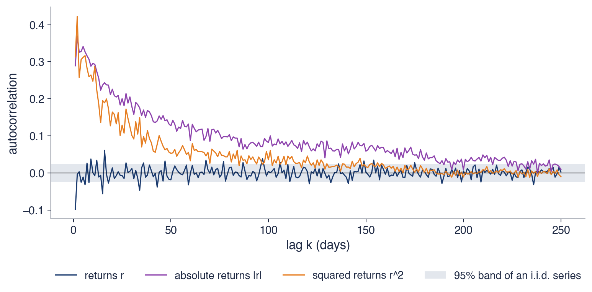

Capitolul 11: Ipoteza piețelor fractale și memoria lungă
Daniel Traian PELE
Academia de Studii Economice din București IDA Institute Digital Assets Blockchain Research Center AI4EFin Artificial Intelligence for Energy Finance Academia Română, Institutul de Prognoză Economică MSCA Digital Finance
GPH: Geweke–Porter-Hudak (log-periodogram estimator) — estimatorul Geweke–Porter-Hudak pe log-periodogramă
HAR: Heterogeneous AutoRegressive (model) — model autoregresiv heterogen
IGARCH: Integrated GARCH (GARCH integrat)
MA: Moving Average (medie mobilă)
OLS: Ordinary Least Squares (metoda celor mai mici pătrate)
SE: Standard Error (eroare standard)
SFE: Statistics of Financial Markets, Exercises (Quantlet collection of the textbook) — colecția de Quantlet-uri a manualului Statistics of Financial Markets
Capitolele anterioare au stabilit două fapte care par să se contrazică. Randamentele zilnice sînt aproape necorelate la laguri mici, așa cum cere forma slabă a ipotezei pieței eficiente (Capitolul 7); volatilitatea lor este însă persistentă: zilele agitate urmează după zile agitate (Capitolele 8 și 9). Acest capitol pune întrebarea la scara lagurilor mari: își amintesc randamentele de azi ce s-a întîmplat acum cîteva luni? Instrumentul central este exponentul Hurst \(H\), care măsoară în același timp memoria unei serii și modul în care riscul ei crește cu orizontul. Pentru un mers aleator, \(H = 0{,}5\).
Ipoteza pieței fractale (FMH, fractal market hypothesis) a lui Edgar Peters adaugă o a doua temă: cine tranzacționează și pe ce orizont. Piața este stabilă cînd conține investitori cu orizonturi foarte diferite, de la minute la decenii, iar crizele apar cînd aceste orizonturi se reduc la unul singur. Ipoteza este formulată verbal, dar are consecințe statistice care pot fi testate: autosimilaritatea randamentelor la scale diferite, memoria pe orizonturi lungi și schimbarea acestei memorii în crize.
Pe datele zilnice ale S&P 500 din 2000 pînă în septembrie 2026, direcția randamentelor nu are memorie lungă: exponentul DFA (detrended fluctuation analysis) al randamentelor este 0,49, în interiorul benzii de 95% a seriilor fără memorie, \([0{,}46; 0{,}54]\). Mărimea randamentelor are însă memorie lungă puternică: exponentul DFA al randamentelor absolute este 0,95. Aceeași diferență apare la toate cele șase piețe ale capitolului, cu o excepție parțială, BET, ale cărui randamente arată o persistență slabă. Capitolul construiește estimatorii care dau aceste cifre, arată cum rupturile structurale și volatilitatea persistentă pot imita memoria lungă și discută ce înseamnă rezultatele pentru scalarea riscului cu orizontul.

Funcția de autocorelație a randamentelor zilnice ale S&P 500 (albastru închis), a randamentelor absolute (mov) și a pătratelor lor (portocaliu), pentru lagurile 1–250; zona albastră hașurată este banda de 95% a unei serii i.i.d., \(\pm 0{,}024\).
Ce veți putea face
Enunțați ipoteza pieței fractale și comparați-o cu ipoteza pieței eficiente și cu ipoteza piețelor adaptive.
Memoria lungă și risculScalarea VaR cu \(h^H\) în locul regulii rădăcinii pătrate a timpului.
AI pentru descoperire științificăO întrebare deschisă despre exponentul Hurst înaintea crizelor, ajutorul posibil al AI și verificările necesare.
RezumatIdeile principale, formulele și întrebări de autoevaluare.
De la piețe eficiente la piețe fractale
Secțiunea pornește de la ipoteza pieței eficiente și de la faptele pe care modelul ei standard, mersul aleator cu creșteri Normale, nu le explică. Introduce apoi ipoteza pieței fractale, care descrie piața prin investitorii ei și prin orizonturile lor, o ilustrează cu crahul din 1987 și arată ce consecințe statistice ale ei pot fi testate. Secțiunea se încheie cu o comparație între ipoteza pieței eficiente, ipoteza pieței fractale și ipoteza piețelor adaptive.
Ipoteza pieței eficiente (EMH, efficient market hypothesis) afirmă că prețurile reflectă informația disponibilă (Fama, 1970). În forma ei slabă, studiată în Capitolul 7, randamentele trecute nu ajută la anticiparea randamentelor viitoare. Modelul statistic asociat este mersul aleator al prețurilor logaritmice, cu creșteri independente. În limbajul acestui capitol, mersul aleator corespunde exponentului Hurst \(H = 0{,}5\), iar orice abatere sistematică de la 0,5 indică o formă de dependență pe termen lung.
Mersul aleator cu creșteri Normale lasă însă neexplicate mai multe fapte stilizate. Randamentele au cozi groase (Capitolele 2, 3 și 5): zilele extreme sînt mult mai frecvente decît permite distribuția Normală. Volatilitatea apare în grupuri, fenomenul de volatility clustering din Capitolele 8 și 9. Iar crahuri precum cel din 19 octombrie 1987, discutat mai jos, nu au loc în urma unei informații noi de o mărime comparabilă.
Mai există o întrebare pe care EMH nu și-o pune: cine tranzacționează și pe ce orizont. Teoria tratează toți investitorii ca pe un singur investitor reprezentativ, care evaluează corect informația. Ipoteza pieței fractale pornește exact de aici: ea descrie piața ca pe o populație de investitori cu orizonturi diferite și leagă stabilitatea pieței de diversitatea acestor orizonturi.
Pe scurt
EMH (efficient market hypothesis, ipoteza pieței eficiente, Fama (1970); Capitolul 7): prețurile reflectă informația disponibilă, deci randamentele nu pot fi anticipate din randamentele trecute
mersul aleator al prețurilor implică creșteri independente: în acest capitol, \(H = 0{,}5\)
Fapte pe care mersul aleator cu creșteri Normale nu le explică
Ipoteza pieței fractale a fost formulată de Peters (1994). Punctul ei de plecare este că piața este formată din investitori cu multe orizonturi investiționale (investment horizons), de la traderii care țin o poziție cîteva minute pînă la fondurile de pensii care investesc pentru decenii. Un același eveniment de preț are semnificații diferite pentru acești investitori, iar interacțiunea lor determină dinamica prețurilor.
Peters formulează ipoteza prin cinci afirmații. Prima: piața este stabilă cînd conține investitori cu orizonturi foarte diferite, pentru că aceștia își asigură reciproc lichiditatea. A doua: orizonturile scurte reacționează mai ales la sentiment și la informația tehnică, cele lungi la informația fundamentală. A treia: dacă informația fundamentală devine îndoielnică, investitorii pe termen lung se retrag sau încep să tranzacționeze pe termen scurt; orizonturile devin uniforme, iar piața devine instabilă. A patra: prețul combină tranzacționarea tehnică pe termen scurt cu evaluarea fundamentală pe termen lung. A cincea: un activ fără legătură cu ciclul economic nu are o tendință pe termen lung, astfel încît dinamica lui este dominată de tranzacționarea pe termen scurt și de lichiditate.
Cuvîntul „fractal” se referă la structura pe mai multe scale. Dacă pe fiecare orizont acționează același tip de mecanism, randamentele pe orizonturi diferite ar trebui să arate asemănător din punct de vedere statistic, după o rescalare potrivită. Această proprietate, autosimilaritatea, este subiectul secțiunii următoare.
Pe scurt
FMH (fractal market hypothesis, ipoteza pieței fractale) Peters (1994): piața este formată din investitori cu multe orizonturi investiționale, de la minute la decenii
Cele cinci afirmații ale lui Peters
piața este stabilă cînd conține investitori cu orizonturi foarte diferite: astfel se asigură lichiditatea
orizonturile scurte reacționează la sentiment și la informația tehnică; orizonturile lungi reacționează la informația fundamentală
dacă informația fundamentală devine îndoielnică, investitorii pe termen lung se retrag sau încep să tranzacționeze pe termen scurt: orizonturile devin uniforme, iar piața devine instabilă
prețurile combină tranzacționarea tehnică pe termen scurt și evaluarea fundamentală pe termen lung
un activ fără legătură cu ciclul economic nu are tendință pe termen lung: domină tranzacționarea pe termen scurt și lichiditatea
Orizonturi investiționale și lichiditate: un exemplu
Exemplul slide-ului face mecanismul concret. O acțiune scade cu 3% într-o dimineață. Pentru un day trader, al cărui orizont este de cîteva ore, o scădere de 3% este o mișcare mare, care îi poate anula cîștigurile zilei, și reacția lui este să vîndă. Pentru un fond de pensii cu un orizont de zece ani, aceeași scădere este mică în raport cu variațiile pe care le așteaptă pe acel orizont, iar prețul mai mic este o ocazie de a cumpăra.
Cele două tipuri de investitori sînt astfel contrapărți naturale. Investitorul cu orizont lung oferă lichiditatea de care are nevoie investitorul cu orizont scurt, iar prețul se ajustează ordonat, fără salturi. Lichiditatea nu este, în această interpretare, o proprietate a activului, ci rezultatul faptului că participanții evaluează același preț pe orizonturi diferite.
Dacă și fondul de pensii începe să judece piața pe orizontul orelor următoare, de exemplu pentru că nu mai are încredere în informația fundamentală, nimeni nu mai cumpără. Lichiditatea dispare, iar scăderea se accelerează. Același tipar de comportament se poate repeta pe fiecare orizont, ceea ce dă randamente asemănătoare statistic la scale diferite: sensul cuvîntului „fractal” în numele ipotezei.
Pe scurt
O acțiune scade cu 3% într-o dimineață
un day trader (orizont: ore) vede o mișcare mare și vinde
un fond de pensii (orizont: zece ani) vede o mișcare mică în raport cu orizontul lui și cumpără la un preț mai mic
Investitorul cu orizont lung oferă lichiditatea cerută de investitorul cu orizont scurt: prețul evoluează ordonat
Dacă și fondul de pensii începe să se teamă de orele următoare, nu mai cumpără nimeni: nu mai există lichiditate, iar scăderea se accelerează
Fractal: același tipar de comportament se repetă pe fiecare orizont, cu randamente asemănătoare statistic la scale diferite
Pe 19 octombrie 1987, S&P 500 a scăzut cu aproximativ 20% într-o singură zi (Carlson, 2007). Graficul publicat de Rezerva Federală arată evoluția indicelui în zilele din jurul crahului: scăderea s-a produs într-o singură ședință, fără o informație economică nouă de o mărime comparabilă.
Interpretarea FMH pune accentul pe orizonturi. Asigurarea de portofoliu (portfolio insurance) și tranzacționarea automată programată să vîndă cînd prețurile scad au făcut ca portofolii cu orizont lung să vîndă exact ca traderii pe termen scurt. Toate orizonturile s-au redus, în fapt, la unul singur, iar cumpărătorii care ar fi trebuit să ofere lichiditate au dispărut.
Din această interpretare decurge o consecință testabilă. Dacă în crize domină orizonturile scurte, structura statistică a randamentelor pe scale diferite ar trebui să se schimbe în perioadele de criză. Slide-ul următor arată cum se traduce această idee în mărimi care pot fi estimate.
Pe scurt
19 octombrie 1987: S&P 500 a scăzut cu circa 20% într-o singură zi Carlson (2007)
Interpretarea FMH
asigurarea de portofoliu și tranzacționarea automată au făcut ca portofoliile pe termen lung să vîndă ca traderii pe termen scurt
toate orizonturile s-au redus la unul singur: cumpărătorii au dispărut
Consecință testabilă: în crize domină orizonturile scurte, iar structura statistică pe scale diferite se schimbă
FMH este o teorie formulată verbal, fără un model probabilistic propriu. Consecințele ei statistice pot fi totuși testate, iar capitolul le urmărește pe trei. Prima este autosimilaritatea: distribuția randamentelor pe \(h\) zile ar trebui să arate la fel după rescalarea cu \(h^H\) (Secțiunea 2). A doua este memoria: exponentul Hurst \(H\) măsoară dependența pe orizonturi lungi (Secțiunile 3–5). A treia este schimbarea: în crize, \(H\) și ponderea orizonturilor scurte ar trebui să se modifice (Secțiunea 8).
Studiile de referință pentru a treia consecință sînt cele ale lui Kristoufek (2012) și Kristoufek (2013) despre criza financiară din 2008. Primul folosește exponenți Hurst locali, estimați pe ferestre mobile, iar al doilea folosește puterea wavelet, care arată cum se distribuie varianța unei serii pe scale de timp diferite și cum se schimbă această distribuție în timp. Ambele studii analizează indici bursieri importanți.
Rezultatul lor este în acord cu FMH: perioadele cele mai turbulente ale crizei coincid cu dominația orizonturilor investiționale scurte. Rezultatul nu dovedește mecanismul lui Peters, dar arată că predicția lui despre orizonturi are un corespondent măsurabil în date.
Pe scurt
FMH este o teorie formulată verbal; consecințele ei statistice pot fi testate
autosimilaritate: distribuția randamentelor pe \(h\) zile arată la fel după rescalarea cu \(h^H\) (secțiunea 2)
Tabelul compară trei ipoteze despre piețe. EMH (Fama, 1970) lucrează cu un investitor reprezentativ, iar prețurile sînt mereu corecte în raport cu informația disponibilă. FMH (Peters, 1994) lucrează cu investitori pe multe orizonturi, iar stabilitatea vine din diversitatea acestora. Ipoteza piețelor adaptive (AMH, adaptive markets hypothesis) a lui Lo (2004) descrie piața ca pe un ecosistem de „specii” de investitori și de strategii care concurează și se adaptează, astfel încît gradul de eficiență se schimbă odată cu mediul.
Rîndul despre memorie traduce cele trei ipoteze în limbajul capitolului. Pentru EMH, \(H = 0{,}5\). Pentru FMH, \(H\) poate fi diferit de 0,5, deoarece structura pe orizonturi poate produce dependență pe termen lung. Pentru AMH, \(H\) variază în timp, odată cu condițiile pieței. Ultimul rînd arată cum privește fiecare ipoteză crizele: pentru EMH ele sînt în afara teoriei, pentru FMH sînt prăbușiri ale orizonturilor, iar pentru AMH sînt episoade în care multe strategii dispar în același timp.
Cele trei ipoteze nu sînt teste rivale, între care datele ar alege una singură. EMH este o aproximare bună în condiții normale; FMH și AMH încearcă să explice unde și de ce această aproximare nu mai funcționează. Pentru analiza statistică, consecința practică este că \(H\) trebuie estimat atît pe întregul eșantion, cît și pe subperioade.
Cele trei nu sînt teste rivale: FMH și AMH explică unde și de ce aproximarea EMH nu mai funcționează
Sinteza secțiunii
EMH tratează piața ca pe un singur investitor reprezentativ și implică \(H = 0{,}5\). FMH descrie piața prin investitorii ei cu orizonturi diferite, leagă stabilitatea de diversitatea acestor orizonturi și interpretează crahuri precum cel din 1987 ca prăbușiri ale lor. Consecințele ei testabile sînt autosimilaritatea, memoria pe orizonturi lungi și schimbarea acestei memorii în crize. Secțiunea următoare definește prima dintre ele, autosimilaritatea.
Autosimilaritate și fractali
Secțiunea introduce limbajul geometric al capitolului. Pornește de la lucrările lui Benoît Mandelbrot, definește dimensiunea fractală și procesele autosimilare și arată că autosimilaritatea are o consecință directă pentru randamente: abaterea standard a randamentelor pe \(h\) zile crește ca \(h^H\). Panta acestei creșteri, estimată pentru S&P 500, BET și Bitcoin, dă o primă estimare a exponentului Hurst.
Benoît Mandelbrot (1924–2010) a adus în finanțe ideea că neregularitatea poate fi măsurată. În Mandelbrot (1963) a arătat că variațiile prețului bumbacului au cozi groase și că distribuția lor arată asemănător la scară zilnică, lunară și anuală. Modelul propus atunci au fost distribuțiile \(\alpha\)-stabile, subiectul Capitolului 3, care sînt invariante, pînă la o rescalare, la însumarea variabilelor independente.
În Mandelbrot (1967), Mandelbrot a pus o întrebare de geometrie: cît de lungă este coasta Marii Britanii? Lungimea măsurată a unei coaste crește pe măsură ce rigla folosită devine mai mică, pentru că o riglă mai scurtă urmărește mai multe dintre golfurile și promontoriile ei. Rata la care crește lungimea cînd rigla se micșorează definește o dimensiune fractală (fractal dimension), care măsoară cît de neregulată este curba.
Mandelbrot & Van Ness (1968) au definit mișcarea browniană fracționară, modelul probabilistic central al acestui capitol. Ideea comună a acestor lucrări este noțiunea de fractal: un obiect ale cărui părți seamănă cu întregul, fie exact, ca în figurile geometrice, fie în distribuție, ca în seriile de prețuri. Mulțimea Mandelbrot din imagine este cel mai cunoscut exemplu vizual.
Pe scurt
Mandelbrot (1963): prețurile bumbacului au cozi groase și arată asemănător la scară zilnică, lunară și anuală
Cea mai simplă dimensiune fractală este dimensiunea de similaritate. Dacă un obiect este format din \(N\) copii ale lui însuși, fiecare micșorată cu factorul \(1/s\), atunci dimensiunea lui este \(D = \ln N / \ln s\). Definiția reproduce dimensiunile obișnuite: un segment este format din 2 jumătăți, deci \(D = \ln 2/\ln 2 = 1\); un pătrat este format din 4 pătrate cu latura de două ori mai mică, deci \(D = \ln 4/\ln 2 = 2\).
Pentru obiectele fractale, dimensiunea nu este un număr întreg. Curba Koch este formată din 4 copii ale ei, fiecare micșorată de 3 ori, deci \(D = \ln 4/\ln 3 = 1{,}262\): este mai mult decît o linie, dar mai puțin decît o suprafață. Triunghiul Sierpinski este format din 3 copii micșorate de 2 ori, cu \(D = \ln 3/\ln 2 = 1{,}585\). Pentru coasta de vest a Marii Britanii, Mandelbrot (1967) dă \(D \approx 1{,}25\).
Legătura cu finanțele trece prin graficul unei traiectorii de preț. Pentru mișcarea browniană fracționară, dimensiunea fractală a graficului este \(D = 2 - H\). O mișcare browniană obișnuită, cu \(H = 0{,}5\), are \(D = 1{,}5\). O traiectorie cu tendințe persistente (\(H > 0{,}5\)) este mai netedă și are \(D < 1{,}5\); o traiectorie cu inversări frecvente (\(H < 0{,}5\)) este mai neregulată și are \(D > 1{,}5\).
Pe scurt
Dimensiunea de similaritate: un obiect format din \(N\) copii ale lui însuși, fiecare scalată cu \(1/s\), are \(D = \ln N/\ln s\)
un segment: 2 jumătăți, \(D = \ln 2/\ln 2 = 1\); un pătrat: 4 sferturi cu latura \(1/2\), \(D = \ln 4/\ln 2 = 2\)
curba Koch: 4 copii scalate cu \(1/3\), \(D = \ln 4/\ln 3 = 1{,}262\)
triunghiul Sierpinski: 3 copii scalate cu \(1/2\), \(D = \ln 3/\ln 2 = 1{,}585\)
Coasta de vest a Marii Britanii: \(D \approx 1{,}25\)Mandelbrot (1967)
Graficul unei traiectorii de preț: \(D = 2 - H\)
mișcarea browniană: \(D = 1{,}5\); o traiectorie mai netedă, cu tendințe (\(H > 0{,}5\)), are \(D < 1{,}5\)
Un proces stochastic \(X_t\) este autosimilar (self-similar) cu exponentul \(H\) dacă, pentru orice \(c > 0\),
\[X_{ct} \overset{d}{=} c^H X_t,\]
(11.1)
unde \(\overset{d}{=}\) înseamnă egalitate în distribuție (Franke, Härdle & Hafner (2019), Def. 14.1). Dilatarea axei timpului cu factorul \(c\) are același efect ca dilatarea valorilor cu factorul \(c^H\). Exponentul \(H\) se numește exponentul Hurst.
Mișcarea browniană din Capitolul 4 este autosimilară cu \(H = 1/2\):\(W_{ct} \overset{d}{=} \sqrt{c}\,W_t\). Pentru prețurile logaritmice cu creșteri autosimilare, (11.1) are o consecință directă asupra randamentelor pe mai multe zile. Dacă \(r_t^{(h)}\) este randamentul pe \(h\) zile, atunci abaterea standard a acestuia este \(\mathrm{sd}(r_t^{(h)}) = h^H\,\mathrm{sd}(r_t)\). Regula rădăcinii pătrate a timpului, \(\sqrt{h}\), folosită curent pentru scalarea volatilității și a VaR, este cazul particular \(H = 1/2\).
Relația dă un prim estimator al lui \(H\). Prin logaritmare, \(\ln \mathrm{sd}(r^{(h)}) = \ln \mathrm{sd}(r) + H \ln h\), deci pe un grafic cu ambele axe logaritmice punctele trebuie să stea pe o dreaptă cu panta \(H\). Slide-ul următor aplică acest estimator pe trei piețe.
Pe scurt
Proces autosimilarFranke, Härdle & Hafner (2019), Def. 14.1: \(X_{ct} \overset{d}{=} c^H X_t\) pentru orice \(c > 0\); \(H\) este exponentul Hurst
\(\overset{d}{=}\): egalitate în distribuție; dilatarea timpului cu \(c\) echivalează cu dilatarea valorilor cu \(c^H\)
Mișcarea browniană (Capitolul 4) este autosimilară cu \(H = 1/2\): \(W_{ct} \overset{d}{=} \sqrt{c}\,W_t\)
Consecință pentru prețurile logaritmice cu creșteri autosimilare
\(\mathrm{sd}(r_t^{(h)}) = h^H\,\mathrm{sd}(r_t)\), unde \(r_t^{(h)}\) este randamentul pe \(h\) zile, iar sd abaterea standard
regula rădăcinii pătrate a timpului, \(\sqrt{h}\), este cazul particular \(H = 1/2\)
Un prim estimator al lui \(H\): panta dreptei lui \(\ln \mathrm{sd}(r^{(h)})\) în funcție de \(\ln h\)
Întrebare pentru sală Numărăm cutiile pe traiectoria fBm cu H = 0,5 (calcul suplimentar, care nu este în curs). Ce dimensiune iese?
Răspuns
Circa 1,5: panta este 1,47 cu ε de la 1/2 la 1/128, aproape de D = 2 − H = 1,5. Traiectoria este o curbă, dar atît de neregulată încît numărul de cutii crește ca ε^(−1,5), nu ca ε^(−1). Pentru H = 0,1 numărarea dă doar 1,74 în loc de 1,9: cu 1000 de puncte, neregularitatea de sub pasul de timp nu se vede, deci D este subestimat la traiectoriile foarte neregulate.
Întrebare pentru sală S&P 500: raportul dintre abaterea standard a randamentelor pe 10 zile și cea zilnică este peste sau sub √10 = 3,16?
Răspuns
Sub: 2,80. Randamentele zilnice ale S&P 500 au autocorelația de ordinul 1 negativă, −0,099, deci zilele succesive se compensează parțial (ușoară revenire la medie). BET are 3,50, peste √10 (autocorelație pozitivă), iar Bitcoin 3,20, aproape de √10.
Graficul arată, pentru S&P 500, BET și Bitcoin, abaterea standard a randamentelor pe \(h\) zile împărțită la abaterea standard a randamentelor zilnice, pentru orizonturi de la o zi la 250 de zile, cu datele disponibile pînă la 18 septembrie 2026. Randamentele pe \(h\) zile sînt calculate pe blocuri fără suprapunere. Ambele axe sînt logaritmice, iar linia întreruptă este regula rădăcinii pătrate a timpului, cu panta 0,5.
Pantele estimate sînt 0,48 pentru S&P 500, 0,59 pentru BET și 0,55 pentru Bitcoin. Curba S&P 500 se află sub linia întreruptă la toate orizonturile: riscul pe mai multe zile crește ceva mai încet decît prevede regula \(\sqrt{h}\). Curba BET se află deasupra liniei, iar distanța crește cu orizontul: riscul pe un an este mai mare decît cel obținut prin scalarea riscului zilnic cu \(\sqrt{250}\). Curba Bitcoin este aproape de linie la orizonturi scurte și deasupra ei la orizonturi lungi.
Panta rezumă toate orizonturile de la 1 la 250 de zile, iar punctele de la orizonturile mari, unde se abate cel mai mult BET, au o influență mare asupra ei. Slide-ul următor citește graficul la un singur orizont, de 10 zile, și leagă abaterile de la \(\sqrt{h}\) de autocorelațiile randamentelor zilnice.
Pe scurt
Abaterea standard a randamentelor pe \(h\) zile, fără suprapunere, împărțită la cea zilnică, \(h = 1, \dots, 250\), scale logaritmice; date pînă la 18 septembrie 2026
Pante: S&P 500 \(0{,}48\), BET \(0{,}59\), Bitcoin \(0{,}55\); regula rădăcinii pătrate are panta 0,5
Pentru S&P 500, abaterea standard a randamentelor pe 10 zile este de 2,80 ori abaterea standard zilnică, sub valoarea \(\sqrt{10} = 3{,}16\) a regulii rădăcinii pătrate. Explicația este o ușoară revenire la medie: autocorelația de ordinul întîi a randamentelor zilnice este negativă, \(-0{,}099\). Cînd randamentele consecutive au tendința să se compenseze parțial, varianța sumei lor este mai mică decît suma varianțelor.
Pentru BET, raportul la 10 zile este 3,50, peste \(\sqrt{10}\), ceea ce indică o autocorelație pozitivă. O sursă a ei este tranzacționarea redusă (thin trading) din primii ani ai indicelui, discutată în Capitolul 7: cînd unele acțiuni din indice nu se tranzacționează zilnic, informația nouă intră în preț cu întîrziere, iar indicele se ajustează lent, în mai multe zile consecutive cu același semn. Pentru Bitcoin, raportul este 3,20, aproape de \(\sqrt{10}\).
Pantele trebuie citite cu prudență. La orizontul de 250 de zile există doar cîteva zeci de blocuri fără suprapunere, iar abaterea standard estimată din atît de puține valori este imprecisă. O pantă de 0,55 nu poate fi deosebită de 0,5 fără o bandă de încredere. Capitolul construiește, de aceea, estimatori mai buni ai lui \(H\) și benzi Monte Carlo pentru ei.
Pe scurt
S&P 500: riscul pe 10 zile este de \(2{,}80\) ori riscul zilnic, sub \(\sqrt{10} = 3{,}16\)
ușoară revenire la medie: randamentele zilnice au autocorelația de ordinul întîi negativă, \(-0{,}099\)
BET: de \(3{,}50\) ori, peste \(\sqrt{10}\): autocorelație pozitivă
tranzacționarea redusă din primii ani face ca indicele să se ajusteze lent (Capitolul 7)
Bitcoin: de \(3{,}20\) ori, aproape de \(\sqrt{10}\)
Atenție: există doar cîteva zeci de blocuri de 250 de zile fără suprapunere; panta este imprecisă, deci avem nevoie de un estimator adecvat și de o bandă de încredere
Sinteza secțiunii
Un proces autosimilar își păstrează distribuția cînd timpul este dilatat cu \(c\) și valorile cu \(c^H\); pentru randamente, consecința este că abaterea standard pe \(h\) zile crește ca \(h^H\). Pantele de scalare sînt 0,48 pentru S&P 500, 0,59 pentru BET și 0,55 pentru Bitcoin, față de 0,5 pentru regula rădăcinii pătrate a timpului, dar se sprijină pe puține blocuri la orizonturi lungi. Secțiunea următoare introduce un estimator al lui \(H\) cu o istorie mai lungă, statistica R/S a lui Hurst.
Hurst, Nilul și statistica R/S
Exponentul Hurst își are numele de la un hidrolog care proiecta rezervoare pe Nil. Secțiunea arată cum problema capacității unui rezervor a dus la statistica R/S, calculează statistica pas cu pas pe un exemplu mic, construiește din ea un estimator al lui \(H\) și arată că, în eșantioane mici, acest estimator este deplasat în sus chiar și pentru date fără memorie.
Harold Edwin Hurst (1880–1978) a fost un hidrolog britanic care a lucrat în Egipt din 1906 și a proiectat rezervoare pe Nil. Întrebarea lui practică era cît de mare trebuie să fie un rezervor pentru a livra în fiecare an debitul mediu al rîului. Un rezervor care primește debitul unui an și eliberează media se umple în anii cu debit mare și se golește în anii cu debit mic, astfel încît capacitatea necesară este egală cu amplitudinea abaterilor cumulate ale debitelor de la medie.
Hurst (1951) a studiat cum crește această amplitudine cu numărul de ani \(n\). Pentru debite independente, teoria prevede o creștere ca \(n^{0{,}5}\). În seriile de debite ale rîurilor, de precipitații și de grosime a inelelor copacilor, Hurst a găsit o creștere ca \(n^K\), cu \(K\) în medie de aproximativ 0,73. Diferența dintre exponenți se amplifică pe perioade lungi: capacitatea necesară crește mult mai repede cu numărul de ani decît prevede ipoteza debitelor independente.
Explicația este că anii cu debit mare tind să urmeze după ani cu debit mare, iar anii secetoși după ani secetoși. Abaterile de la medie nu se compensează rapid, ci se acumulează pe perioade lungi. Aceasta este memoria lungă (long memory), iar exponentul lui Hurst a devenit măsura ei standard. Nilometrul de pe insula Roda din Cairo, din imagine, construit în anul 861, este una dintre sursele istorice ale datelor despre nivelul Nilului.
Pe scurt
Hurst (1880–1978), hidrolog britanic care a lucrat în Egipt din 1906, a proiectat rezervoare pe Nil
capacitatea necesară pentru a livra în fiecare an debitul mediu este egală cu amplitudinea abaterilor cumulate ale debitelor de la medie
Hurst (1951): pentru debite independente, această amplitudine crește ca \(n^{0{,}5}\); în seriile de debite ale rîurilor, de precipitații și de inele ale copacilor crește ca \(n^{K}\), cu \(K\) în medie de circa \(0{,}73\)
anii cu debit mare urmează după ani cu debit mare: memorie lungă
Statistica R/S formalizează calculul lui Hurst pentru un bloc de observații \(x_1, \dots, x_n\) cu media \(\bar x\). Abaterile cumulate de la medie sînt \(Y_k = \sum_{j=1}^{k} (x_j - \bar x)\), pentru \(k = 1, \dots, n\); prin construcție, \(Y_n = 0\). Amplitudinea lor este \(R_n = \max_k Y_k - \min_k Y_k\), iar abaterea standard a blocului este \(S_n = \sqrt{\frac1n \sum_j (x_j - \bar x)^2}\). Statistica amplitudinii rescalate (rescaled range), definită în Franke, Härdle & Hafner (2019), 14.4.1, este
\[(R/S)_n = \frac{R_n}{S_n}\]
(11.2)
Împărțirea la \(S_n\) elimină unitatea de măsură, astfel încît \((R/S)_n\) este comparabilă între active cu volatilități diferite.
Comportamentul lui \((R/S)_n\) cînd \(n\) crește este cel care contează. Pentru date i.i.d. cu varianță finită, \((R/S)_n\) crește ca \(n^{1/2}\), ca o consecință a teoremei limită centrale funcționale: abaterile cumulate se comportă ca o punte browniană, a cărei amplitudine este de ordinul \(\sqrt{n}\). În cazul memoriei lungi, abaterile cumulate se îndepărtează mai mult de zero, iar \((R/S)_n\) crește ca \(n^H\), cu \(H > 1/2\).
O proprietate utilă a statisticii este robustețea la cozi groase (Mandelbrot & Wallis, 1969). O valoare extremă mărește atît amplitudinea \(R_n\), cît și abaterea standard \(S_n\), iar raportul lor este afectat mult mai puțin decît fiecare separat. Pentru randamentele financiare, cu cozile lor groase, această proprietate este un avantaj față de estimatorii bazați direct pe varianțe.
Pe scurt
Blocul \(x_1, \dots, x_n\), cu media \(\bar x\); abaterile cumulate\(Y_k = \sum_{j=1}^{k}(x_j - \bar x)\), \(k = 1, \dots, n\)
\[\log_{10}(R/S)_n = \log_{10} c + H \log_{10} n + e_n, \qquad \hat H = \frac{\sum (u - \bar u)(v - \bar v)}{\sum (u - \bar u)^2}\]
Întrebare pentru sală Panta OLS a lui log₁₀ (R/S)_n pentru randamentele S&P 500 este 0,530. Ce devine ea pentru randamentele absolute |r|?
Răspuns
Circa 0,86 (0,861), mult peste banda i.i.d. [0,51; 0,57]: memorie lungă a volatilității. Pentru randamente, 0,530 se află în bandă, deoarece R/S este deplasat în sus în eșantioane mici.
Întrebare pentru sală ▶ trece la ferestre de 8 zile ale S&P 500. În 9–18 martie 2020 abaterea standard este 7,56%, de circa 15 ori mai mare decît în exemplul din curs (0,489). Cum se compară (R/S)₈ cu 1,788?
Răspuns
Este de același ordin: 1,530. R și S cresc împreună cu volatilitatea, deci raportul nu are unitate de măsură; pentru 8 valori R/S rămîne între circa 1,5 și 2,8 (2,317 în ianuarie 2000, 2,774 în octombrie 2008, 2,155 în septembrie 2026). Împărțirea la S face statistica comparabilă între active.
Exemplul aplică definiția pe opt randamente zilnice, în procente: 0,5; −0,3; 0,8; −0,2; 0,6; −0,1; 0,4; −0,7. Suma lor este 1,0, deci media este \(\bar x = 0{,}125\). Abaterile de la medie sînt +0,375; −0,425; +0,675; −0,325; +0,475; −0,225; +0,275; −0,825, iar sumele lor cumulate dau \(Y_1, \dots, Y_8\): 0,375; −0,050; 0,625; 0,300; 0,775; 0,550; 0,825; 0,000.
Graficul arată abaterile ca bare și abaterile cumulate ca linie. Maximul abaterilor cumulate este 0,825, atins la \(k = 7\), iar minimul este −0,050, la \(k = 2\), deci amplitudinea este \(R = 0{,}825 - (-0{,}050) = 0{,}875\). Suma pătratelor abaterilor este 1,915, deci \(S = \sqrt{1{,}915/8} = 0{,}489\). Statistica R/S a blocului este \((R/S)_8 = 0{,}875/0{,}489 = 1{,}788\).
Ultima valoare, \(Y_8 = 0\), verifică calculul: suma abaterilor de la medie este întotdeauna zero. Un singur bloc dă însă un singur punct, iar exponentul \(H\) descrie cum se schimbă \((R/S)_n\) cu mărimea blocului. Pentru a-l estima este nevoie de multe mărimi de bloc, ceea ce face procedura de pe slide-ul următor.
Procedura standard pentru estimarea lui \(H\) cu R/S urmează lucrarea lui Mandelbrot & Wallis (1969). Pentru o serie de \(N\) randamente, se aleg mărimi de bloc \(n\) între 10 și \(N/4\), la distanțe egale pe o scară logaritmică. Pentru fiecare \(n\), seria se împarte în \(\lfloor N/n \rfloor\) blocuri fără suprapunere, se calculează R/S în fiecare bloc, iar media acestor valori este \((R/S)_n\).
Exponentul se estimează apoi prin metoda celor mai mici pătrate (OLS, ordinary least squares) în regresia
\[\ln (R/S)_n = \ln c + H \ln n + e_n,\]
(11.3)
unde \(c\) este o constantă, iar \(e_n\) este eroarea regresiei. Panta estimată \(\hat H\) este estimatorul R/S al exponentului Hurst. Limita inferioară de 10 observații evită blocurile prea mici, în care R/S este dominată de efecte de eșantion, iar limita superioară \(N/4\) asigură cel puțin patru blocuri pentru fiecare medie.
Graficul log-log al lui \((R/S)_n\) în funcție de \(n\) este principalul instrument de diagnostic. Dacă punctele stau pe o dreaptă, un singur exponent de scalare descrie seria; o curbură sau o schimbare de pantă indică un comportament diferit pe scale scurte și lungi. Metoda se aplică randamentelor, care sînt staționare, nu prețurilor: pentru o serie de prețuri, abaterile cumulate cresc liniar cu mărimea blocului, iar \((R/S)_n\) crește aproximativ ca \(n\), indiferent de memorie.
Tabelul rezumă cele trei regimuri ale lui \(H\). Pentru \(0 < H < 0{,}5\), creșterile sînt corelate negativ, iar memoria este antipersistentă (anti-persistent): o creștere tinde să fie urmată de o scădere. Traiectoria este neregulată, cu dimensiunea fractală \(D = 2 - H > 1{,}5\). Pentru \(H = 0{,}5\), creșterile sînt necorelate, ca într-un mers aleator, iar \(D = 1{,}5\). Pentru \(0{,}5 < H < 1\), creșterile sînt corelate pozitiv, memoria este persistentă și produce tendințe, iar traiectoria este mai netedă, cu \(D < 1{,}5\).
O confuzie frecventă este citirea lui \(H\) ca probabilitate. \(H = 0{,}7\) nu înseamnă că semnul randamentului se repetă în 70% din zile. \(H\) este un exponent de scalare: el descrie cum crește variabilitatea sumelor cu lungimea perioadei și, echivalent, cît de încet scad autocorelațiile la laguri mari.
Mandelbrot & Wallis (1968) au dat nume biblice celor două abateri de la modelul gaussian independent. Efectul Noe (Noah effect) se referă la valorile extreme: cozile groase, potopul. Efectul Iosif (Joseph effect) se referă la seriile lungi de valori mari sau mici, ca în „șapte ani de belșug, șapte ani de foamete”. Cele două efecte sînt distincte și au măsuri diferite: \(H\) măsoară efectul Iosif, iar tail index-ul din Capitolul 5 măsoară efectul Noe.
Pe scurt
\(H\)
creșteri
memorie
traiectorie (\(D = 2 - H\))
\(0 < H < 0{,}5\)
corelate negativ
antipersistentă: inversări
neregulată, \(D > 1{,}5\)
\(H = 0{,}5\)
necorelate
fără memorie (mers aleator)
\(D = 1{,}5\)
\(0{,}5 < H < 1\)
corelate pozitiv
persistentă: tendințe
mai netedă, \(D < 1{,}5\)
\(H\) nu este o probabilitate: \(H = 0{,}7\) nu înseamnă „70% șanse ca semnul să se repete”
Rezultatul că \((R/S)_n\) crește ca \(n^{1/2}\) pentru date i.i.d. este asimptotic. Anis & Lloyd (1976) au calculat valoarea așteptată exactă a lui \((R/S)_n\) pentru sume Normale independente și au arătat că aceasta se apropie de \(c\,n^{1/2}\) doar pentru \(n\) mare; pentru \(n\) mic, \((R/S)_n\) crește mai repede decît \(n^{1/2}\). Panta estimată pe blocuri de la \(n = 10\) la \(N/4\) este, de aceea, peste 0,5 chiar și pentru date fără nicio memorie.
O simulare Monte Carlo cu 500 de serii i.i.d. Normale măsoară această deplasare (bias). Media estimatorului R/S este 0,588 pentru serii de 250 de observații, 0,562 pentru 1000 de observații și 0,547 pentru 5000 de observații. Deplasarea scade cu lungimea seriei, dar nu dispare la lungimile uzuale ale datelor financiare. Pentru \(N = 1000\), 95% dintre estimări se află în intervalul \([0{,}50; 0{,}63]\).
Regula practică care rezultă este să nu comparăm \(\hat H\) cu 0,5, ci cu distribuția lui \(\hat H\) în ipoteza nulă, simulată pentru același \(N\) și cu aceleași mărimi de bloc. O estimare R/S de 0,56 pe 1000 de observații nu este o dovadă de memorie lungă: este exact media estimatorului pentru date fără memorie. Secțiunea 5 construiește astfel de benzi pentru toți estimatorii capitolului.
Pe scurt
Pentru date i.i.d., \((R/S)_n\) se apropie de \(c\,n^{1/2}\) doar pentru \(n\) mare; pentru \(n\) mic crește mai repede Anis & Lloyd (1976)
panta estimată pe \(n = 10, \dots, N/4\) este peste 0,5 chiar fără nicio memorie
Monte Carlo, 500 de serii i.i.d. Normale
\(\hat H_{R/S}\) mediu: \(0{,}588\) pentru \(N = 250\), \(0{,}562\) pentru \(N = 1000\), \(0{,}547\) pentru \(N = 5000\)
banda de 95% pentru \(N = 1000\): \([0{,}50; 0{,}63]\)
Regulă: comparăm \(\hat H\) cu distribuția lui \(\hat H\) în ipoteza nulă, pentru același \(N\), nu cu 0,5 (secțiunea 5)
Sinteza secțiunii
Statistica R/S a lui Hurst măsoară amplitudinea abaterilor cumulate, raportată la abaterea standard, iar panta ei pe un grafic log-log estimează \(H\). Pentru date independente panta este 0,5 asimptotic, dar în eșantioanele uzuale este deplasată în sus: în medie 0,562 pentru 1000 de observații i.i.d. \(H\) măsoară efectul Iosif, persistența, nu efectul Noe, valorile extreme. Secțiunea următoare dă definiția exactă a memoriei lungi și modelele care o generează.
Memoria lungă: definiții și modele
Secțiunea definește memoria lungă prin autocorelații și prin densitatea spectrală și o compară cu memoria scurtă a modelelor ARMA. Introduce apoi două familii de modele cu memorie lungă: mișcarea browniană fracționară, împreună cu creșterile ei, zgomotul gaussian fracționar, și modelul ARFIMA, construit prin diferențiere fracționară. Pentru fiecare model, slide-urile calculează autocorelațiile și arată traiectorii simulate.
Fie \(X_t\) un proces staționar cu funcția de autocorelație (ACF, autocorrelation function) \(\rho(k)\). Procesul are memorie lungă dacă autocorelațiile lui nu sînt sumabile, \(\sum_k |\rho(k)| = \infty\)(Franke, Härdle & Hafner (2019), 14.1). Forma parametrică uzuală a acestei proprietăți este scăderea hiperbolică
\[\rho(k) \sim C\,k^{2d - 1}, \qquad k \to \infty,\]
(11.4)
cu o constantă \(C > 0\) și parametrul de memorie (memory parameter) \(0 < d < 0{,}5\); simbolul \(\sim\) înseamnă că raportul celor doi membri tinde la 1. Pentru \(0 < d < 0{,}5\) exponentul \(2d - 1\) este între −1 și 0, deci suma autocorelațiilor diverge. Scăderea hiperbolică implică nesumabilitatea; reciproca nu este adevărată în general, dar toate modelele acestui capitol au forma (11.4).
În domeniul frecvenței, aceeași proprietate apare ca un pol al densității spectrale (spectral density) în zero: \(f(\lambda) \sim C\,\lambda^{-2d}\) cînd \(\lambda \to 0\). Densitatea spectrală \(f(\lambda)\) descompune varianța seriei pe frecvențe, iar frecvențele apropiate de zero corespund ciclurilor foarte lungi. O serie cu memorie lungă are o parte mare din varianță în aceste cicluri lungi.
Memoria scurtă este cea a modelelor ARMA (autoregressive moving average). Pentru un AR(1) cu coeficientul \(\phi\),\(\rho(k) = \phi^k\) scade exponențial, iar suma \(\sum_k |\phi|^k\) este finită, egală cu \(1/(1 - |\phi|)\). Diferența dintre \(\phi^k\) și \(k^{2d-1}\) este diferența dintre un șoc uitat după cîteva perioade și un șoc care contează încă după sute de perioade. Legătura cu exponentul Hurst este \(d = H - 1/2\).
Pe scurt
\(X_t\) staționar, cu autocorelațiile \(\rho(k)\) (ACF, autocorrelation function, funcția de autocorelație); memorie lungăFranke, Härdle & Hafner (2019), 14.1:
\(\sum_{k} |\rho(k)| = \infty\): autocorelațiile nu sînt sumabile
forma uzuală: scădere hiperbolică \(\rho(k) \sim C\,k^{2d - 1}\) cînd \(k \to \infty\), cu parametrul de memorie\(0 < d < 0{,}5\); ea implică nesumabilitatea, reciproca nu este adevărată în general
în frecvență: densitatea spectrală are un pol în zero, \(f(\lambda) \sim C\,\lambda^{-2d}\) cînd \(\lambda \to 0\)
\(C > 0\): o constantă; \(\sim\): raportul celor doi membri tinde la 1; \(f(\lambda)\): partea din varianță la frecvența \(\lambda\) (ciclurile lungi: \(\lambda\) aproape de 0)
Memorie scurtă: modelele ARMA (autoregressive moving average, autoregresive cu medie mobilă), de exemplu AR(1) cu \(\rho(k) = \phi^k\)
Exemplul compară două procese cu aceeași autocorelație de ordinul întîi. Primul este un zgomot gaussian fracționar cu \(H = 0{,}8\), modelul cu memorie lungă definit cîteva slide-uri mai departe. Autocorelația lui de ordinul întîi este \(\rho(1) = 2^{2H-1} - 1 = 2^{0{,}6} - 1 = 0{,}516\), iar la laguri mari autocorelațiile sînt \(\rho(10) = 0{,}191\),\(\rho(50) = 0{,}100\) și \(\rho(100) = 0{,}076\).
Al doilea proces este un AR(1) cu \(\phi = 0{,}516\), ales astfel încît să aibă aceeași autocorelație de ordinul întîi. Autocorelațiile lui sînt puterile lui \(\phi\):\(\rho(10) = 0{,}516^{10} = 0{,}0013\), iar \(\rho(100) = 0{,}516^{100}\) este practic zero.
Pe termen scurt, cele două procese nu pot fi deosebite după prima autocorelație. Pe termen lung, ele sînt foarte diferite: după 10 laguri, autocorelația procesului cu memorie lungă este cu două ordine de mărime mai mare decît cea a AR(1), iar după 100 de laguri un șoc mai contează doar pentru procesul cu memorie lungă. Un model ARMA ajustat pe autocorelațiile de la laguri mici nu poate reproduce o astfel de persistență.
Mișcarea browniană fracționară (fBm, fractional Brownian motion) \(B_H(t)\), cu \(0 < H < 1\), este procesul gaussian cu traiectorii continue, autosimilar cu exponentul \(H\) și cu creșteri staționare (Mandelbrot & Van Ness, 1968), cu proprietățile din Franke, Härdle & Hafner (2019), Def. 14.2. Cele trei proprietăți îl determină, pînă la o constantă de scală: este generalizarea naturală a mișcării browniene la exponenți Hurst diferiți de 1/2.
Momentele procesului sînt date de Teorema 14.1 din Franke, Härdle & Hafner (2019). Procesul pornește din zero, \(B_H(0) = 0\), are media zero și varianța \(E[B_H(t)^2] = \sigma^2 |t|^{2H}\), unde \(\sigma^2\) este varianța la \(t = 1\). Covarianța dintre două momente de timp este
Varianța care crește ca \(|t|^{2H}\) este autosimilaritatea (11.1) exprimată prin momente.
Pentru \(H = 1/2\), formula (11.5) devine \(\sigma^2 \min(t, s)\), covarianța mișcării browniene, ale cărei creșteri sînt independente. Pentru \(H \neq 1/2\), creșterile pe intervale disjuncte sînt corelate la toate lagurile: pozitiv pentru \(H > 1/2\), negativ pentru \(H < 1/2\). Deoarece procesul este gaussian și covarianța lui este cunoscută exact, el poate fi simulat exact, din matricea de covarianță a creșterilor; metoda scufundării circulante (circulant embedding) face acest calcul rapid și pentru serii lungi.
Pe scurt
Mișcarea browniană fracționară (fBm, fractional Brownian motion) \(B_H(t)\), \(0 < H < 1\)Mandelbrot & Van Ness (1968); Franke, Härdle & Hafner (2019), Def. 14.2: proces gaussian cu traiectorii continue, autosimilar cu exponentul \(H\) și cu creșteri staționare
Întrebare pentru sală ▶ crește H al fGn de la 0,55 la 0,95. Cum se schimbă ρ(100)?
Răspuns
Crește de la circa 0,001 (H = 0,55) la circa 0,54 (H = 0,95); la H = 0,8 este 0,076. Pentru H mare, ρ(k) scade ca k^(2H − 2), adică foarte încet. AR(1) cu același ρ(1) are ρ(100) practic 0 pentru orice H: scăderea lui este geometrică.
Întrebare pentru sală Ce autocorelație de ordinul 1 au creșterile traiectoriei cu H = 0,7?
Răspuns
Teoretic 2^(2H − 1) − 1 = 2^0,4 − 1 = 0,32; pe cele 1000 de creșteri simulate, 0,32 (0,316). Pentru H = 0,3: −0,23 pe date, −0,24 teoretic. H nu este o autocorelație și nici o probabilitate.
Graficul din stînga arată trei traiectorii fBm de 1000 de pași, cu \(H = 0{,}3\),\(0{,}5\) și \(0{,}7\), simulate din aceleași numere aleatoare. Folosirea acelorași numere aleatoare face ca diferențele dintre traiectorii să provină numai din exponent. Graficul din dreapta arată primele 150 de creșteri ale fiecărei traiectorii, adică zgomotul gaussian fracționar corespunzător.
Traiectoria cu \(H = 0{,}7\) face excursii lungi într-o singură direcție și atinge cea mai mare amplitudine, de peste 75 de unități sub punctul de plecare. Traiectoria cu \(H = 0{,}3\) își schimbă des direcția și rămîne aproape de zero. Mișcarea browniană, cu \(H = 0{,}5\), se află între ele. Diferența de amplitudine este consecința directă a varianței \(\sigma^2 t^{2H}\): după 1000 de pași, \(t^{2H}\) este mult mai mare pentru \(H = 0{,}7\) decît pentru \(H = 0{,}3\).
Creșterile din dreapta arată aproape la fel pentru cei trei exponenți: memoria nu se vede cu ochiul liber în seria creșterilor, ci în acumularea lor. Ea apare însă în autocorelații. Autocorelația de ordinul întîi a creșterilor simulate este 0,32 pentru \(H = 0{,}7\) și −0,23 pentru \(H = 0{,}3\), aproape de valorile teoretice 0,32 și −0,24.
Pe scurt
Aceleași numere aleatoare, \(H = 0{,}3\), \(0{,}5\), \(0{,}7\) (ca în SFEfbmplot); dreapta: primele 150 de creșteri
\(H = 0{,}7\): excursii lungi și amplitudine mare; \(H = 0{,}3\): inversări frecvente, amplitudine mică; autocorelația de ordinul 1 a creșterilor \(0{,}32\) și \(-0{,}23\) (teoretic \(0{,}32\) și \(-0{,}24\))
Zgomotul gaussian fracționar (fGn, fractional Gaussian noise) este seria creșterilor fBm, \(Y_k = B_H(k+1) - B_H(k)\)(Franke, Härdle & Hafner (2019), 14.3). Deoarece fBm are creșteri staționare, fGn este o serie staționară, analogul cu memorie al zgomotului alb. Din (11.5) rezultă funcția lui de autocorelație
iar pentru \(k\) mare, \(\rho(k) \approx H(2H - 1)\,k^{2H-2}\). Comparînd cu (11.4), exponentul \(2H - 2\) este \(2d - 1\) pentru \(d = H - 1/2\).
Semnul factorului \(H(2H - 1)\) dă cele trei regimuri. Pentru \(1/2 < H < 1\), toate autocorelațiile sînt pozitive și nu sînt sumabile: memorie lungă, cu \(d = H - 1/2\) între 0 și 1/2. Pentru \(H = 1/2\), toate autocorelațiile de la lagul 1 în sus sînt zero: zgomot alb. Pentru \(0 < H < 1/2\), autocorelațiile sînt negative și sumabile: antipersistență, o formă de memorie diferită de memoria lungă în sensul definiției (11.4).
fGn este modelul din spatele estimatorilor R/S și DFA. Pentru o serie fGn, ambii estimatori estimează exponentul Hurst \(H\) al fBm din care provine seria. De aceea, randamentele se tratează ca un fGn posibil, iar prețurile logaritmice ca un fBm posibil.
Întrebare pentru sală Pe slide, ACF de selecție a fGn cu H = 0,8 este sub cea teoretică. De ce?
Răspuns
Estimarea mediei elimină o parte din componenta lentă a seriei: cu memorie lungă, media de selecție urmează valurile lungi, iar abaterile de la ea sînt mai puțin corelate. Pe lagurile 1–50, ACF de selecție este în medie cu 0,040 sub cea teoretică. Simularea prin scufundare circulantă este exactă, iar formula ACF a fGn este exactă la orice lag.
Graficul din stînga arată ACF de selecție a două serii fGn simulate, de 5000 de valori, împreună cu ACF teoretică dată de (11.6). Pentru \(H = 0{,}8\), autocorelațiile încep de la \(\rho(1) = 0{,}516\) și scad lent, rămînînd clar pozitive la lagul 50. Pentru \(H = 0{,}2\), autocorelația de ordinul întîi este \(\rho(1) = -0{,}340\), iar cele de la lagurile mai mari sînt aproape zero.
Graficul din dreapta are ambele axe logaritmice. Pe aceste axe, scăderea hiperbolică \(k^{2H-2}\) a fGn cu \(H = 0{,}8\) este o dreaptă, care ajunge la aproximativ 0,03 la lagul 1000. Curba AR(1) cu același \(\rho(1) = 0{,}516\) se prăbușește sub \(10^{-4}\) înainte de lagul 15. Graficul face vizibilă diferența dintre memoria lungă și cea scurtă: o lege de putere față de o exponențială.
În graficul din stînga, punctele de selecție pentru \(H = 0{,}8\) se află sistematic sub curba teoretică. Fenomenul este caracteristic seriilor cu memorie lungă. ACF de selecție se calculează în jurul mediei de selecție, iar într-o serie cu memorie lungă media de selecție urmărește parțial ciclurile lungi ale seriei; scăderea mediei de selecție elimină o parte din componenta lentă și micșorează autocorelațiile estimate.
Pe scurt
Stînga: ACF de selecție și teoretică pentru \(H = 0{,}8\) și \(H = 0{,}2\) (ca în SFEfgnacf); \(\rho(1) = 0{,}516\) și \(-0{,}340\)
Dreapta, scale logaritmice: scădere hiperbolică (o dreaptă) față de scăderea exponențială a unui AR(1) cu același \(\rho(1)\)
ACF de selecție a unei serii cu memorie lungă este sub cea teoretică: estimarea mediei elimină o parte din componenta lentă
Al doilea model cu memorie lungă vine din econometria seriilor de timp (Granger & Joyeux, 1980; Hosking, 1981). Modelul ARFIMA(0,\(d\),0) (autoregressive fractionally integrated moving average) este definit de
\[(1 - L)^d X_t = \varepsilon_t,\]
(11.7)
unde \(\varepsilon_t\) este i.i.d. cu media 0 și varianța \(\sigma^2\), iar \(L\) este operatorul lag (lag operator), \(L X_t = X_{t-1}\). Pentru \(d = 0\) modelul este zgomot alb, iar pentru \(d = 1\) este mersul aleator din Capitolul 7. Noutatea este că \(d\) poate lua valori neîntregi.
Operatorul \((1 - L)^d\) cu \(d\) neîntreg se definește prin dezvoltarea binomială (Franke, Härdle & Hafner (2019), 14.2): \((1 - L)^d = \sum_{j \ge 0} \pi_j L^j\), cu \(\pi_0 = 1\) și \(\pi_j = \pi_{j-1}(j - 1 - d)/j\). Modelul se poate scrie atunci ca \(X_t = \varepsilon_t - \sum_{j \ge 1} \pi_j X_{t-j}\): valoarea curentă depinde de tot trecutul, cu ponderi care scad lent, ca o putere a lui \(j\). În forma de medie mobilă infinită, \(X_t = \sum_{j \ge 0} \psi_j \varepsilon_{t-j}\), cu \(\psi_0 = 1\) și \(\psi_j = \psi_{j-1}(j - 1 + d)/j\), fiecare șoc din trecut contribuie cu o pondere care scade tot ca o putere.
Autocorelațiile au o formă închisă, \(\rho(k) = \Gamma(1-d)\Gamma(k+d)/[\Gamma(d)\Gamma(k+1-d)]\), unde \(\Gamma\) este funcția gamma, cu \(\Gamma(n) = (n-1)!\) pentru numere întregi. Mai util pentru calcul este recurența \(\rho(k) = \rho(k-1)(k - 1 + d)/(k - d)\), pornind de la \(\rho(1) = d/(1 - d)\). Pentru \(k\) mare, \(\rho(k) \sim C k^{2d - 1}\), deci modelul are memorie lungă pentru \(0 < d < 1/2\), cu același parametru \(d\) ca în definiția (11.4).
Tabelul, preluat din Franke, Härdle & Hafner (2019), tabelul 14.1, descrie comportamentul modelului ARFIMA pe tot domeniul lui \(d\). Pentru \(d\) între −0,5 și 0, memoria este antipersistentă, iar ACF scade hiperbolic, cu valori negative. Pentru \(d = 0\), memoria este scurtă și ACF scade exponențial, ca la modelele ARMA. Pentru \(d\) între 0 și 0,5, memoria este lungă, iar seria este staționară, cu varianță finită. Pe acest domeniu, \(H = d + 1/2\).
Pentru \(d\) între 0,5 și 1, seria are memorie lungă, dar nu mai este staționară: varianța ei este infinită. Seria revine totuși la medie (mean reversion), în sensul că efectul unui șoc se stinge în cele din urmă. Pentru \(d = 1\), seria are o rădăcină unitară (unit root): șocurile sînt permanente, iar ACF nu scade. Integrarea fracționară acoperă astfel tot spațiul dintre cazul staționar \(d = 0\) și rădăcina unitară \(d = 1\) din Capitolul 7, pe care testele clasice îl tratează ca pe o alegere între două valori.
Modelul general ARFIMA(\(p\),\(d\),\(q\)) combină cele două tipuri de memorie (Franke, Härdle & Hafner (2019), 14.6.1): o parte ARMA(\(p\),\(q\)) descrie dinamica pe termen scurt, iar parametrul \(d\) descrie dependența pe termen lung. Separarea permite estimarea memoriei lungi fără ca autocorelațiile de la laguri mici să o contamineze.
Întrebare pentru sală ARFIMA(0; 0,3; 0): după cîte laguri scade autocorelația sub 0,05?
Răspuns
După 222 de laguri; un AR(1) cu același ρ(1) = 0,429 scade sub 0,05 după 4 laguri. ρ(k) tinde totuși la 0 (staționaritate, d < 0,5), doar foarte încet: ρ(100) = 0,069.
Întrebare pentru sală ARFIMA(0,d,0) cu d = 0,4: ρ(1) = 0,667. Cît este ρ(50)?
Răspuns
0,307: scăderea hiperbolică păstrează mult din ρ(1), de aceea seria face valuri lente în jurul mediei. Un AR(1) cu φ = 0,667 ar avea ρ(50) = 0,667⁵⁰, practic 0. Cu d = 0,1, ρ(50) este doar 0,005.
Graficele din stînga arată cîte 1000 de valori simulate din ARFIMA(0,\(d\),0), cu \(d = 0{,}4\) (sus) și \(d = -0{,}4\) (jos). Graficele din dreapta compară ACF de selecție, calculată pe serii mai lungi, de 20 000 de valori, cu ACF teoretică.
Seria cu \(d = 0{,}4\) face valuri lente în jurul mediei: perioade lungi deasupra ei, urmate de perioade lungi dedesubt. Autocorelațiile teoretice sînt \(\rho(1) = 0{,}667\),\(\rho(10) = 0{,}424\) și \(\rho(50) = 0{,}307\): la lagul 50, autocorelația este încă aproape jumătate din cea de la lagul 1. ACF de selecție este, din nou, sub cea teoretică, din motivul discutat pentru fGn: media de selecție absoarbe o parte din valurile lente.
Seria cu \(d = -0{,}4\) arată ca un zgomot cu oscilații rapide. Autocorelația ei de ordinul întîi este \(\rho(1) = -0{,}286\), iar cele de la laguri mai mari sînt aproape zero, deși toate sînt negative. Antipersistența este, așadar, mult mai greu de observat la laguri mari decît memoria lungă pozitivă.
Pe scurt
Stînga: 1000 de valori simulate (ca în SFEarfima); dreapta: ACF de selecție (20000 de valori) și ACF teoretică
\(d = 0{,}4\): \(\rho(1) = 0{,}667\), \(\rho(10) = 0{,}424\), \(\rho(50) = 0{,}307\): valuri lente în jurul mediei; \(d = -0{,}4\): \(\rho(1) = -0{,}286\), apoi aproape zero
Exemplul calculează pas cu pas ponderile și autocorelațiile pentru \(d = 0{,}3\). Ponderile operatorului \((1 - L)^{0{,}3}\) sînt \(\pi_1 = -d = -0{,}300\) și \(\pi_2 = \pi_1(1 - d)/2 = -0{,}105\), iar ponderile formei de medie mobilă sînt \(\psi_1 = d = 0{,}300\) și \(\psi_2 = \psi_1(1 + d)/2 = 0{,}195\). Un șoc de acum două perioade contează încă cu aproape două treimi din ponderea unui șoc de acum o perioadă.
Autocorelațiile urmează recurența: \(\rho(1) = 0{,}3/0{,}7 = 0{,}429\) și \(\rho(2) = \rho(1) \times 1{,}3/1{,}7 = 0{,}328\). Continuînd recurența, \(\rho(10) = 0{,}173\) și \(\rho(100) = 0{,}069\). Exponentul Hurst corespunzător este \(H = d + 0{,}5 = 0{,}8\).
Comparația cu un AR(1) cu aceeași autocorelație de ordinul întîi, \(\phi = 0{,}429\), arată din nou diferența dintre cele două tipuri de memorie. Pentru AR(1), \(\rho(10) = 0{,}0002\). Autocorelația scade sub 0,05 după 4 laguri pentru AR(1) și abia după 222 de laguri pentru ARFIMA; în date zilnice, aceasta înseamnă aproape un an de tranzacționare.
AR(1) cu \(\phi = 0{,}429\): \(\rho(10) = 0{,}0002\)
Autocorelația scade sub 0,05 după 4 laguri pentru AR(1) și după 222 de laguri pentru ARFIMA; \(H = d + 0{,}5 = 0{,}8\)
Sinteza secțiunii
Memoria lungă înseamnă autocorelații care nu sînt sumabile și care scad hiperbolic, \(\rho(k) \sim C k^{2d - 1}\), sau, echivalent pentru modelele uzuale, o densitate spectrală cu un pol în zero. Mișcarea browniană fracționară și creșterile ei, zgomotul gaussian fracționar, realizează această proprietate pentru \(H > 1/2\); modelul ARFIMA o realizează prin diferențiere fracționară, cu \(d = H - 1/2\). În ambele modele, autocorelațiile rămîn semnificative după sute de laguri, acolo unde un AR(1) cu aceeași primă autocorelație a uitat demult șocul. Secțiunea următoare arată cum se estimează \(H\) și \(d\) din date.
Estimatori ai memoriei lungi
Secțiunea compară patru instrumente pentru măsurarea memoriei lungi: estimatorul R/S, analiza fluctuațiilor fără tendință (DFA), regresia GPH pe log-periodogramă și testul R/S modificat al lui Lo. Pentru fiecare, ea arată ce estimează și ce punct slab are, apoi construiește benzi Monte Carlo care țin seama de eșantioanele finite. Instrumentele se aplică pe randamentele zilnice ale S&P 500 din 2000 și pe randamentele lor absolute.
Tabelul rezumă cele patru instrumente ale secțiunii. Estimatorul R/S lucrează în domeniul timpului și dă \(\hat H\) ca pantă a unui grafic log-log; punctele lui slabe sînt deplasarea în sus în eșantioane mici și sensibilitatea la memoria scurtă. Testul R/S modificat al lui Lo, tot în domeniul timpului, este un test al ipotezei de memorie scurtă, cu putere mică față de memoria lungă. DFA dă un exponent \(\alpha\) care estimează \(H\), cere alegerea mărimilor de bloc și este afectat de rupturile structurale.
Regresia GPH lucrează în domeniul frecvenței și dă o estimare \(\hat d\) a parametrului de memorie, cu o eroare standard calculată analitic. Prețul acestei comodități este o varianță mare și dependența rezultatului de lățimea de bandă (bandwidth) \(m\), numărul de frecvențe joase folosite.
Literatura oferă și alți estimatori: estimatorul Whittle local, numit și gaussian semiparametric (Robinson, 1995), estimatorii bazați pe wavelets și verosimilitatea maximă exactă pentru modelele ARFIMA (Franke, Härdle & Hafner (2019), 14.5). Deoarece fiecare estimator are alt punct slab, buna practică este raportarea mai multor estimatori, fiecare cu incertitudinea lui; o concluzie pe care o susțin estimatori cu puncte slabe diferite este mai credibilă decît una susținută de un singur estimator.
Pe scurt
Instrument
Domeniu
Rezultat
Punct slab
R/S
timp
\(\hat H\), panta unui grafic log-log
deplasat în sus în eșantioane mici; sensibil la memoria scurtă
Analiza fluctuațiilor fără tendință (DFA, detrended fluctuation analysis) a fost introdusă de Peng et al. (1994) pentru secvențe de ADN și a fost concepută pentru semnale cu tendințe care se schimbă lent. Procedura are patru pași. Întîi, se construiește profilul (profile) seriei, \(Y_k = \sum_{j \le k} (x_j - \bar x)\), aceeași sumă cumulată ca în statistica R/S. Apoi, profilul se împarte în blocuri de mărime \(n\), iar în fiecare bloc se estimează o dreaptă prin OLS.
Al treilea pas calculează funcția de fluctuație \(F(n)\), rădăcina mediei pătratelor abaterilor profilului de la dreptele locale, pe toate blocurile. Al patrulea pas repetă calculul pentru mai multe mărimi de bloc și estimează exponentul din relația
\[F(n) \propto n^{\alpha},\]
(11.8)
ca pantă a lui \(\ln F(n)\) în funcție de \(\ln n\).
Pentru un fGn, \(\alpha = H\):\(\alpha = 0{,}5\) pentru zgomot alb, iar \(0{,}5 < \alpha < 1\) pentru memorie lungă. Pentru un fBm, adică pentru o serie de prețuri, \(\alpha = H + 1\), deoarece profilul unei serii deja cumulate este o dublă sumă. Dreapta locală elimină tendințele liniare din fiecare bloc, ceea ce face DFA mai puțin sensibilă decît R/S la tendințele lente. Kantelhardt et al. (2001) arată că \(F(n)\) nu este de încredere pentru blocuri mai mici de aproximativ 10 observații, unde dreapta locală absoarbe o parte prea mare din fluctuație.
Pe scurt
DFAPeng et al. (1994): concepută pentru semnale cu tendințe care se schimbă lent
Întrebare pentru sală Cum se schimbă F(n) al randamentelor S&P 500 cînd n crește de la 10 la 1678?
Răspuns
Crește de circa 13 ori (de la 0,935 la 12,37), aproape cît √(1678/10) = 13,0, deoarece α̂ = 0,49 ≈ 0,5. Pentru |r| crește de circa 100 de ori: α̂ = 0,95. F(n) crește proporțional cu n doar pentru un profil cu tendință (fBm are α = H + 1).
Întrebare pentru sală Randamentele S&P 500 au panta R/S 0,53. Este o dovadă de H > 0,5?
Răspuns
Nu: seriile i.i.d. Normale de aceeași lungime dau în medie panta 0,55, pentru că R/S este deplasat în sus în eșantioane mici. DFA dă 0,49, față de 0,50 pentru seriile i.i.d. Randamentele absolute au R/S 0,86 și DFA 0,95: memoria lungă este în volatilitate.
Graficul aplică R/S (stînga) și DFA (dreapta) randamentelor zilnice ale S&P 500 din 2000 (puncte albastre) și randamentelor lor absolute (pătrate mov), pe 20 de mărimi de bloc între 10 și 1678 de zile. Ambele axe sînt logaritmice, iar pe axa verticală a graficului DFA funcția de fluctuație este împărțită la valoarea ei pentru \(n = 10\). Linia întreruptă este curba medie a seriilor i.i.d. Normale de aceeași lungime, adică referința fără memorie, inclusiv deplasarea în eșantioane finite.
Pentru randamente, punctele urmează linia întreruptă. Panta R/S este 0,53, iar media pentru seriile i.i.d. este 0,55; panta DFA este 0,49, față de 0,50 pentru seriile i.i.d. Comparată cu 0,5, panta R/S de 0,53 ar sugera o persistență slabă, dar comparată cu referința corectă, 0,55, nu arată nimic. Randamentele S&P 500 nu au memorie lungă.
Pentru randamentele absolute, imaginea este alta. Pantele sînt 0,86 pentru R/S și 0,95 pentru DFA, iar punctele se depărtează de linia întreruptă pe măsură ce mărimea blocului crește. Randamentele absolute măsoară mărimea mișcărilor zilnice, indiferent de semn, deci sînt o aproximare a volatilității; pantele lor indică o memorie lungă puternică a volatilității, subiectul Secțiunii 7.
Pe scurt
20 de mărimi de bloc, de la 10 la 1678 de zile; linia întreruptă: curba medie a seriilor i.i.d. Normale de aceeași lungime
unde \(T\) este numărul de observații, iar \(i\) este unitatea imaginară. Periodograma estimează densitatea spectrală, care pentru o serie cu memorie lungă se comportă ca \(C\lambda^{-2d}\) lîngă frecvența zero.
unde \(m\) este numărul de frecvențe joase folosite, \(c\) o constantă, iar \(e_j\) eroarea. Lîngă zero, \(4\sin^2(\lambda/2) \approx \lambda^2\), deci regresorul \(-\ln(4\sin^2(\lambda_j/2))\) este aproximativ \(-2\ln\lambda_j\), iar panta OLS estimează direct \(d\). Exponentul Hurst corespunzător este \(\hat H = \hat d + 0{,}5\). Eroarea standard asimptotică a lui \(\hat d\) este \(\pi/\sqrt{24m}\), iar alegerea uzuală a lățimii de bandă este \(m = \lfloor T^{0{,}5} \rfloor\).
Alegerea lui \(m\) este un compromis între deplasare și varianță. Un \(m\) mic păstrează doar frecvențele cele mai joase, unde relația \(f(\lambda) \sim C\lambda^{-2d}\) este cea mai precisă, deci deplasarea este mică; dar puține puncte înseamnă o varianță mare. Un \(m\) mare reduce varianța, dar lasă să intre frecvențe mai înalte, unde dinamica pe termen scurt deformează densitatea spectrală și deplasează \(\hat d\).
\(m\): numărul de frecvențe joase folosite; \(c\): o constantă; \(e_j\): eroarea
\(\hat d\) = panta OLS în funcție de \(-\ln(4\sin^2(\lambda_j/2))\); \(\hat H = \hat d + 0{,}5\)
eroarea standard asimptotică \(\pi/\sqrt{24m}\); lățimea de bandă \(m = \lfloor T^{0{,}5}\rfloor\)
Compromis: un \(m\) mic păstrează doar frecvențele de termen lung (deplasare mică, varianță mare); un \(m\) mare lasă să intre dinamica de termen scurt (deplasare)
GPH: randamentele și randamentele absolute S&P 500
\[\ln I(\lambda_j) = c - d\,\ln\!\big(4\sin^2(\lambda_j/2)\big) + e_j, \quad j = 1, \dots, m, \qquad \mathrm{SE} = \pi/\sqrt{24m}\]
Întrebare pentru sală Randamentele S&P 500: d̂ = 0,036, SE = π/√(24 × 81) = 0,071. Ce lățime are intervalul de 95% și conține el 0?
Răspuns
Circa 0,28, de la −0,103 la 0,176, și conține 0: estimarea nu se separă de 0 prin acest test. Asta nu dovedește că d = 0, doar că datele sînt compatibile cu d = 0. Pentru |r|, intervalul este [0,33; 0,61].
Întrebare pentru sală Lățimea de bandă trece de la m = 81 (T^0,5) la m = 477 (T^0,7). Ce se întîmplă cu d̂ pentru |r| și cu SE?
Răspuns
SE scade de la 0,071 la 0,029, iar d̂ crește de la 0,470 la 0,554: frecvențele mai mari aduc mai multă informație, dar și dinamica de termen scurt a volatilității. La m = 33 (T^0,4), d̂ = 0,364 cu SE 0,112.
Graficul arată regresia (11.9) pentru randamentele zilnice ale S&P 500 (stînga) și pentru randamentele lor absolute (dreapta). Fiecare punct este una dintre cele mai joase \(m = 81\) frecvențe; pe axa orizontală este regresorul \(-\ln(4\sin^2(\lambda_j/2))\), care crește cînd frecvența scade, iar pe axa verticală logaritmul periodogramei. Linia neagră este dreapta OLS, a cărei pantă este \(\hat d\).
Pentru randamente, dreapta este aproape orizontală: \(\hat d = 0{,}036\), cu eroarea standard 0,071. Estimarea nu diferă semnificativ de zero, deci periodograma nu crește spre frecvențele joase: nu există un exces de varianță în ciclurile lungi. Punctele sînt foarte dispersate în jurul dreptei, ceea ce ilustrează varianța mare a log-periodogramei.
Pentru randamentele absolute, punctele cresc clar spre frecvențele joase (spre dreapta graficului), iar panta este \(\hat d = 0{,}470\), cu aceeași eroare standard, 0,071. Exponentul Hurst corespunzător este \(\hat H = 0{,}97\), aproape de limita domeniului staționar. Estimarea GPH confirmă, în domeniul frecvenței, ce arătaseră R/S și DFA în domeniul timpului: memorie lungă în volatilitate, nu în randamente.
Pe scurt
Se folosesc cele mai joase \(m = 81\) frecvențe; fiecare punct este o frecvență
Randamente: \(\hat d = 0{,}036\) (SE \(0{,}071\)): nu diferă de 0; randamente absolute: \(\hat d = 0{,}470\) (SE \(0{,}071\)), \(\hat H = 0{,}97\)
Statistica R/S clasică are o problemă de specificitate: și memoria scurtă îi mărește valoarea. Un AR(1) cu autocorelație pozitivă face ca abaterile cumulate să se îndepărteze mai mult de zero, la fel ca memoria lungă, deși autocorelațiile lui scad exponențial. Un test bazat pe R/S clasic confundă, așadar, memoria scurtă cu memoria lungă.
Lo (1991) corectează această problemă înlocuind abaterea standard de la numitor cu o estimare a varianței pe termen lung (long-run variance):
unde \(N\) este numărul de randamente, \(R_N\) este amplitudinea abaterilor cumulate pe întregul eșantion, iar \(\hat\gamma_j\) sînt autocovarianțele de selecție. \(\hat\sigma^2_N(q)\) este estimatorul Newey–West al varianței pe termen lung (Newey & West, 1987), care include autocovarianțele pînă la lagul \(q\); pentru \(q = 0\) se obține R/S clasic. Lo alege \(q\) după regula lui Andrews, dependentă de date: \(q = \lfloor (3N/2)^{1/3}\,(2\hat\rho_1/(1 - \hat\rho_1^2))^{2/3} \rfloor\), unde \(\hat\rho_1\) este autocorelația de ordinul întîi.
Ipoteza nulă a testului este memoria scurtă. La pragul de 5%, ea se respinge dacă \(V_N(q)\) iese din intervalul \([0{,}809; 1{,}862]\), ale cărui capete sînt cuantilele de 2,5% și 97,5% ale amplitudinii unei punți browniene. Aplicînd testul, Lo a ajuns la concluzia că randamentele indicilor bursieri din SUA nu au memorie lungă, odată ce se ține cont de memoria scurtă.
Pe scurt
Problema: și memoria scurtă (de exemplu un AR(1)) mărește R/S, deci R/S clasic confundă memoria scurtă cu memoria lungă
\(N\): numărul de randamente; \(R_N\): amplitudinea abaterilor cumulate pe întregul eșantion
\(\hat\gamma_j\): autocovarianțele de selecție; \(\hat\sigma^2_N(q)\): varianța pe termen lung Newey–West Newey & West (1987); \(q = 0\): R/S clasic
\(q = \lfloor (3N/2)^{1/3}\,(2\hat\rho_1/(1 - \hat\rho_1^2))^{2/3}\rfloor\) (\(\hat\rho_1\): autocorelația de ordinul 1), dependent de date (regula lui Andrews, folosită de Lo)
\(H_0\): memorie scurtă; la 5% respingem dacă \(V_N(q) \notin [0{,}809; 1{,}862]\)
Concluzia lui Lo: nu există memorie lungă în randamentele indicilor bursieri din SUA, odată ce se ține cont de memoria scurtă
R/S clasic față de R/S modificat: mărimea și puterea testului
Testul lui Lo pe cele șase serii (la 5%: memoria scurtă este respinsă în afara [0,809; 1,862])
Întrebare pentru sală Randamentele S&P 500: ρ̂₁ = −0,099 și N = 6 714. Ce q dă regula lui Andrews?
Răspuns
7: (3N/2)^(1/3) = 21,60 și (2|ρ̂₁|/(1 − ρ̂₁²))^(2/3) = 0,341, produsul 7,36. Corecția depinde de mărimea lui ρ̂₁, nu de semnul lui. Cu q = 7, V = 1,56 se află în [0,809; 1,862]; pentru |r|, q = 15 și V = 2,66: memoria scurtă este respinsă.
Întrebare pentru sală Pentru AR(1) cu φ = 0,5 (memorie scurtă, H₀ adevărată), în ce proporție respinge testul R/S clasic memoria scurtă la 5%?
Răspuns
În 60% din cazuri; testul modificat al lui Lo, în 5%, cît este nivelul nominal. R/S clasic confundă memoria scurtă cu memoria lungă. Corecția costă putere: pentru fGn cu H = 0,7, ratele de respingere sînt 91% (clasic) și 36% (modificat).
Graficul compară cele două teste prin simulare, pe 500 de serii de 1000 de valori. Pe axa verticală este proporția seriilor pentru care testul respinge memoria scurtă; linia întreruptă este nivelul nominal de 5%. Barele roșii corespund testului clasic (\(q = 0\)), cele albastre testului modificat al lui Lo.
Panoul din stînga măsoară mărimea testului (size), cu serii AR(1), pentru care ipoteza nulă de memorie scurtă este adevărată. Testul clasic respinge tot mai des pe măsură ce \(\phi\) crește: pentru \(\phi = 0{,}5\) respinge în 60% din cazuri, deci găsește „memorie lungă” acolo unde nu există. Testul modificat rămîne la aproximativ 5% pentru toate valorile lui \(\phi\), așa cum trebuie.
Panoul din dreapta măsoară puterea (power), cu serii fGn, care au memorie lungă pentru \(H > 0{,}5\). Pentru \(H = 0{,}7\), testul clasic respinge în 91% din cazuri, iar testul modificat doar în 36%. Corecția pentru memoria scurtă are, așadar, un cost: testul lui Lo detectează greu memoria lungă moderată, iar o nerespingere nu este o dovadă puternică de memorie scurtă (Teverovsky, Taqqu & Willinger, 1999). Estimatorul Newey–West absoarbe o parte din memoria lungă în varianța pe termen lung și micșorează statistica.
Pe scurt
500 de serii de 1000 de valori. Stînga, AR(1) (memorie scurtă, \(H_0\) adevărată): pentru \(\phi = 0{,}5\), testul clasic respinge în 60% din cazuri, testul modificat în 5%
Dreapta, fGn (memorie lungă dacă \(H > 0{,}5\)): pentru \(H = 0{,}7\), ratele de respingere sînt 91% și 36%: corecția costă putere Teverovsky, Taqqu & Willinger (1999)
Distribuțiile asimptotice ale estimatorilor R/S și DFA nu sînt de încredere la mărimile de eșantion din finanțe, iar pentru R/S deplasarea în eșantioane finite este, în plus, sistematică. Weron (2002) propune înlocuirea lor cu simularea. Procedura are trei pași: se simulează multe serii i.i.d. Normale, de aceeași lungime \(N\) ca datele; fiecăreia i se aplică exact același estimator, cu aceleași mărimi de bloc sau aceeași lățime de bandă; cuantilele de 2,5% și 97,5% ale estimărilor \(\hat H\) formează banda de 95% în ipoteza \(H = 0{,}5\).
Regula de decizie este simplă: ipoteza \(H = 0{,}5\) se respinge doar dacă \(\hat H\) se află în afara benzii. Banda conține automat deplasarea estimatorului, deoarece este centrată pe media lui în ipoteza nulă, nu pe 0,5.
Seria i.i.d. Normală este cea mai simplă ipoteză nulă posibilă, dar nu și cea mai potrivită pentru orice întrebare. Randamentele financiare au autocorelații mici la laguri scurte și volatilitate variabilă, iar ambele pot deplasa estimatorii. O ipoteză nulă mai exigentă se obține simulînd un model estimat cu memorie scurtă, de exemplu un AR sau un GARCH; Secțiunea 6 arată de ce această alegere contează pentru volatilitate.
Pe scurt
Rezultatele asimptotice nu sînt de încredere pentru R/S și DFA la mărimile de eșantion din finanțe; folosim simularea Weron (2002)
1. simulăm multe serii i.i.d. Normale, de aceeași lungime \(N\) ca datele
2. aplicăm exact același estimator (aceleași mărimi de bloc, aceeași lățime de bandă)
3. cuantilele de 2,5% și 97,5% ale lui \(\hat H\) formează banda de 95% în ipoteza \(H = 0{,}5\)
Respingem \(H = 0{,}5\) doar dacă \(\hat H\) se află în afara benzii
Seria i.i.d. Normală este cea mai simplă ipoteză nulă; un model estimat cu memorie scurtă (AR, GARCH) dă o ipoteză nulă mai exigentă (secțiunea 6)
Monte Carlo: deplasarea și dispersia estimatorilor
Toți estimatorii; benzile de 95% vin din 500 de serii i.i.d. de aceeași lungime (cu roșu: în afara benzii)
Întrebare pentru sală Pentru randamentele S&P 500, doar un estimator ar părea să indice H > 0,5. Care și de ce nu este o dovadă?
Răspuns
R/S, cu 0,53: banda lui i.i.d. pentru N = 6 714 este [0,51; 0,57], deci 0,53 se află în ea. DFA (0,49), GPH (Ĥ = 0,54, d̂ ± 1,96 SE = [−0,10; 0,18]) și testul lui Lo (V = 1,56) sînt toate compatibile cu absența memoriei lungi.
Întrebare pentru sală La N = 1000, care estimator are cea mai largă bandă de 95% sub H = 0,5?
Răspuns
GPH: lățimea 0,53, față de 0,16 pentru DFA și 0,12 pentru R/S. GPH este practic nedeplasat (media 0,498), dar folosește doar m = 31 de frecvențe; R/S are banda cea mai îngustă, dar centrată la 0,562, nu la 0,5.
Graficul arată rezultatul procedurii pentru cei trei estimatori, cu 500 de serii i.i.d. Normale pentru fiecare lungime \(N\) între 250 și 5000. Valoarea adevărată este \(H = 0{,}5\) (linia întreruptă); fiecare punct este media estimărilor, iar bara verticală este banda de 95%.
Estimatorul R/S (roșu) este deplasat în sus la toate lungimile: media lui este 0,562 la \(N = 1000\), iar deplasarea scade încet cu \(N\). DFA (albastru) are media 0,497 la \(N = 1000\), iar GPH, transformat în \(H = d + 0{,}5\) (verde), are media 0,498: ambii sînt practic nedeplasați. Diferența dintre ei este dispersia.
Lățimea benzii de 95% la \(N = 1000\) este 0,12 pentru R/S, 0,16 pentru DFA și 0,53 pentru GPH. GPH este nedeplasat, dar atît de imprecis încît o estimare individuală spune puțin; R/S este cel mai precis, dar centrat greșit; DFA este un compromis. La \(N = 250\), aproximativ un an de date zilnice, banda DFA are lățimea 0,32: cu atît de puține date, chiar și o abatere de 0,15 de la 0,5 rămîne în interiorul benzii.
Pe scurt
500 de serii i.i.d. Normale pentru fiecare \(N\); valoarea adevărată este \(H = 0{,}5\)
R/S: media \(0{,}562\) la \(N = 1000\) (deplasată în sus); DFA: \(0{,}497\); GPH: \(0{,}498\), nedeplasat, dar cu dispersie mare
Lățimea benzii de 95% la \(N = 1000\): R/S \(0{,}12\), DFA \(0{,}16\), GPH \(0{,}53\); la \(N = 250\): DFA \(0{,}32\)
Tabelul aplică toți estimatorii celor \(N = 6 714\) randamente zilnice ale S&P 500 din 2000 pînă la 18 septembrie 2026. Pe primul rînd sînt randamentele, pe al doilea randamentele absolute, iar pe al treilea benzile de 95% ale seriilor i.i.d. de aceeași lungime. Pentru GPH, banda este dată pentru \(\hat H = \hat d + 0{,}5\), iar pentru testul lui Lo intervalul de acceptare este cel asimptotic.
Pentru randamente, fiecare estimare se află în banda ei. R/S dă 0,53, în banda \([0{,}51; 0{,}57]\); DFA dă 0,49, în banda \([0{,}46; 0{,}54]\); GPH dă \(\hat d = 0{,}04\) cu eroarea standard 0,07, adică \(\hat H = 0{,}54\), în banda \([0{,}36; 0{,}65]\). Statistica lui Lo, \(V_N(q) = 1{,}56\) cu \(q = 7\) laguri, se află în intervalul \([0{,}809; 1{,}862]\), deci memoria scurtă nu este respinsă.
Pentru randamentele absolute, fiecare estimare este mult peste banda ei: R/S 0,86, DFA 0,95 și GPH \(\hat d = 0{,}47\) cu eroarea standard 0,07. Statistica lui Lo este 2,66, cu \(q = 15\) laguri, peste limita de 1,862, deci testul respinge memoria scurtă chiar după corecția pentru autocorelațiile de la laguri mici. Cei patru estimatori, cu puncte slabe diferite, dau aceeași concluzie.
Pe scurt
R/S
DFA
GPH \(\hat d\) (SE)
Lo \(V_N(q)\)
\(q\)
randamente \(r_t\)
\(0{,}53\)
\(0{,}49\)
\(0{,}04\) (\(0{,}07\))
\(1{,}56\)
7
randamente absolute \(|r_t|\)
\(0{,}86\)
\(0{,}95\)
\(0{,}47\) (\(0{,}07\))
\(2{,}66\)
15
banda de 95%, i.i.d.
\([0{,}51; 0{,}57]\)
\([0{,}46; 0{,}54]\)
\([0{,}36; 0{,}65]\)
\([0{,}809; 1{,}862]\)
\(N = 6\,714\) randamente zilnice, din 2000 pînă la 18 septembrie 2026; banda GPH este dată pentru \(\hat H = \hat d + 0{,}5\)
Randamente: fiecare estimare se află în banda ei, \(V_N(q)\) se află în \([0{,}809; 1{,}862]\)
Randamente absolute: fiecare estimare este mult peste banda ei, iar testul lui Lo respinge memoria scurtă
Direcția randamentelor S&P 500 nu are memorie lungă din 2000 încoace. Rezultatul este în acord cu forma slabă a EMH din Capitolul 7 și cu concluzia lui Lo (1991) pentru indicii americani. Singurul estimator care ar părea să indice \(H > 0{,}5\) este R/S, cu 0,53; dar banda lui începe de la 0,51, deoarece estimatorul este deplasat în sus, iar 0,53 se află în interiorul ei.
Mărimea randamentelor are, în schimb, memorie lungă: parametrul de memorie al randamentelor absolute este \(\hat d = 0{,}47\). Interpretarea economică este că regimul de risc, o perioadă liniștită sau una agitată, persistă luni de zile. Este versiunea pe termen lung a fenomenului de volatility clustering: nu doar zilele agitate urmează după zile agitate, ci și lunile agitate urmează după luni agitate.
Înainte de a accepta concluzia că volatilitatea are memorie lungă, trebuie exclusă o explicație alternativă. Rupturile structurale și modelele cu memorie scurtă, dar foarte persistentă, pot produce estimări mari ale lui \(H\) fără să existe memorie lungă în sensul definiției (11.4).Secțiunea următoare tratează această memorie lungă aparentă.
Pe scurt
Direcția randamentelor nu are memorie lungă din 2000 încoace
doar R/S (\(0{,}53\)) ar părea să indice „\(H > 0{,}5\)”; banda lui începe de la \(0{,}51\)
Mărimea randamentelor are memorie lungă: \(\hat d = 0{,}47\) pentru \(|r_t|\)
riscul unei perioade liniștite sau agitate persistă luni de zile: versiunea pe termen lung a volatility clustering
Înainte de a concluziona că există memorie lungă, eliminăm memoria lungă aparentă: secțiunea următoare
Sinteza secțiunii
Cei patru estimatori au puncte slabe diferite: R/S este deplasat în sus și sensibil la memoria scurtă, testul lui Lo are putere mică, DFA cere blocuri de cel puțin aproximativ 10 observații, iar GPH are o varianță mare. Benzile Monte Carlo pentru același \(N\) înlocuiesc comparația naivă cu 0,5. Pe S&P 500 din 2000, toate estimările pentru randamente se află în benzile lor, iar toate estimările pentru randamentele absolute sînt mult peste ele, cu DFA 0,95 și GPH \(\hat d = 0{,}47\).
Memorie lungă aparentă
O estimare mare a lui \(H\) nu dovedește singură memoria lungă. Secțiunea arată două mecanisme care produc memorie lungă aparentă (spurious long memory) în procese care nu o au: schimbările de regim ale mediei și volatilitatea GARCH foarte persistentă. Cazul istoric al Nilului, a cărui medie se schimbă după 1898, și două experimente de simulare măsoară efectul, iar ultimul slide adună verificările care separă memoria lungă reală de cea aparentă.
O serie cu cîteva schimbări ale mediei, numite rupturi structurale (structural breaks), are o ACF de selecție care scade lent, ca a unei serii cu memorie lungă. Mecanismul este simplu. Dacă seria are două regimuri, cu mediile \(\mu_1 \neq \mu_2\), iar ACF se calculează în jurul mediei globale \(\bar x\), orice pereche de observații din același regim are în comun abaterea \(\mu_i - \bar x\). Produsul acestor abateri este pozitiv indiferent de distanța dintre observații, astfel încît autocorelațiile de selecție rămîn pozitive pînă la laguri de ordinul lungimii regimurilor.
Literatura a documentat efectul atît teoretic, cît și pe date. Diebold & Inoue (2001) arată că schimbările rare de regim produc estimări ale lui \(d\) care nu se pot deosebi de memoria lungă reală. Granger & Hyung (2004) arată că o parte din memoria lungă a randamentelor absolute S&P 500 provine din rupturi ocazionale. Lobato & Savin (1998), în schimb, găsesc că memoria lungă a pătratelor randamentelor S&P 500 rezistă verificărilor lor, în timp ce în randamente nu apare.
Concluzia nu este că memoria lungă ar fi întotdeauna o iluzie, ci că o estimare a lui \(d\) sau a lui \(H\) are două interpretări posibile, iar datele trebuie să le separe. Franke, Härdle & Hafner (2019), 14.4.3, prezintă teste construite pentru a distinge memoria lungă reală de cea aparentă.
Pe scurt
O serie cu cîteva schimbări ale mediei are o ACF de selecție care scade lent, ca la memoria lungă
două regimuri cu mediile \(\mu_1 \neq \mu_2\): orice pereche de observații din același regim are în comun abaterea \(\mu_i - \bar x\)
Rezultate de referință
Diebold & Inoue (2001): schimbările rare de regim produc estimări ale lui \(d\) care nu se pot deosebi de memoria lungă reală
Granger & Hyung (2004): o parte din memoria lungă a randamentelor absolute S&P 500 provine din rupturi ocazionale
Lobato & Savin (1998): memoria lungă a pătratelor randamentelor S&P 500 rezistă verificărilor; în randamente nu apare
Seria care l-a condus pe Hurst la memoria lungă oferă și cel mai cunoscut exemplu de ruptură structurală. Cobb (1978) a analizat debitul anual al Nilului la Aswan, între 1871 și 1970, și a arătat că media lui se schimbă după 1898. Debitul mediu este de 1098 înainte de ruptură și de 850 după ea, în unități de \(10^8\) m³, o scădere de 23%.
Momentul schimbării coincide cu construcția barajului Aswan Low Dam, între 1898 și 1902, din imagine. Indiferent de cauza exactă a scăderii debitului măsurat, seria nu este un singur proces staționar, ci două regimuri cu medii diferite.
O serie hidrologică cu o ruptură ridică exact problema unei piețe care își schimbă regimul, de exemplu după o criză, o schimbare de reglementare sau o creștere a lichidității. Slide-ul următor măsoară cît din memoria aparentă a Nilului se datorează rupturii.
Pe scurt
Cobb (1978): debitul anual al Nilului la Aswan, 1871–1970, își schimbă media după 1898
Debitul mediu: 1098 înainte, 850 după (în \(10^8\) m\(^3\)), o scădere de 23%
Schimbarea coincide cu construcția barajului Aswan Low Dam (1898–1902)
O serie hidrologică cu o ruptură ridică aceeași problemă ca o piață care își schimbă regimul
Întrebare pentru sală După eliminarea celor două medii de regim (ruptura din 1898), ce devine Ĥ_R/S al Nilului (0,78 pe seria brută)?
Răspuns
0,63, în banda i.i.d. [0,45; 0,75] pentru N = 100, centrată în 0,60; DFA scade de la 0,84 la 0,50. Cea mai mare parte a memoriei aparente era ruptura, nu persistența debitelor.
Graficul din stînga arată debitul anual al Nilului, cu media perioadei 1871–1898 (1098, roșu) și media perioadei 1899–1970 (850, verde). Graficul din dreapta arată statistica \((R/S)_n\) în funcție de mărimea blocului, pe axe logaritmice, pentru seria brută (albastru) și pentru seria din care s-a scăzut media fiecărui regim (portocaliu); linia întreruptă are panta 0,5.
Pe seria brută, \(\hat H_{R/S} = 0{,}78\), iar DFA dă 0,84: valori care ar indica o memorie lungă puternică. După eliminarea celor două medii de regim, estimările scad la 0,63 pentru R/S și la 0,50 pentru DFA. Diferența se vede în grafic la blocurile mari: punctele seriei brute se ridică brusc, pentru că blocurile lungi conțin ambele regimuri, în timp ce punctele seriei corectate rămîn mai aproape de panta 0,5.
Cu doar \(N = 100\) de ani, banda i.i.d. pentru R/S este largă, \([0{,}45; 0{,}75]\), și este centrată în 0,60, din cauza deplasării estimatorului în eșantioane mici. Estimarea de 0,63 pe seria corectată se află în bandă, iar DFA a scăzut exact la 0,5. Cea mai mare parte a memoriei aparente a Nilului în acest eșantion era, așadar, ruptura din 1898.
Pe scurt
Seria brută: \(\hat H_{R/S} = 0{,}78\), DFA \(0{,}84\); după eliminarea celor două medii de regim: \(0{,}63\) și \(0{,}50\)
Cu \(N = 100\), banda i.i.d. pentru R/S este largă, \([0{,}45; 0{,}75]\), centrată în \(0{,}60\): cea mai mare parte a memoriei aparente era ruptura
Întrebare pentru sală O serie i.i.d. are o schimbare a mediei de 0,5 abateri standard la mijloc. Ce Ĥ dă GPH, în medie?
Răspuns
Circa 0,79 (DFA 0,56), deși seria nu are nicio memorie. Abaterea comună de la media generală face ca observațiile din același regim să pară corelate la toate lagurile. La N = 4000, GPH dă tot 0,79: memoria aparentă nu dispare cu mai multe date.
Graficul măsoară cele două mecanisme prin simulare, pe 300 de serii de 2000 de valori. În panoul din stînga, seriile sînt i.i.d. \(N(0,1)\), cu o schimbare a mediei la mijlocul eșantionului; pe axa orizontală este mărimea schimbării, în abateri standard, iar pe axa verticală media estimărilor lui \(H\). Fără schimbare, DFA și GPH dau 0,5, iar R/S dă aproximativ 0,55, din cauza deplasării lui.
Estimările cresc cu mărimea schimbării, iar GPH reacționează cel mai puternic. O schimbare a mediei de numai 0,5 abateri standard, greu de observat cu ochiul liber într-o serie zgomotoasă, dă GPH \(\hat H = 0{,}79\) și DFA 0,56. GPH este atît de sensibil deoarece o schimbare a mediei pune multă varianță la frecvențele cele mai joase, exact cele pe care se sprijină regresia.
În panoul din dreapta, seriile sînt simulate dintr-un GARCH(1,1), un model cu memorie scurtă (Capitolul 9), cu persistența \(\alpha + \beta\) pe axa orizontală. Pentru randamentele absolute, exponentul DFA crește odată cu persistența: 0,74 la \(\alpha + \beta = 0{,}95\) și 0,89 la 0,99, iar estimarea GPH crește și mai repede. Pentru randamente, DFA rămîne la 0,50 la toate nivelurile de persistență.
Pe scurt
300 de serii de 2000 de valori. Stînga: i.i.d. \(N(0,1)\) cu o schimbare a mediei la mijloc; o schimbare de 0,5 abateri standard dă GPH \(\hat H = 0{,}79\), DFA \(0{,}56\)
Dreapta: GARCH(1,1), un model cu memorie scurtă (Capitolul 9); pentru \(|r_t|\), DFA dă \(0{,}74\) la \(\alpha + \beta = 0{,}95\) și \(0{,}89\) la \(0{,}99\); randamentele rămîn la \(0{,}50\)
Într-un model GARCH(1,1), ACF a pătratelor randamentelor scade ca \((\alpha + \beta)^k\): scădere exponențială, deci memorie scurtă în sensul definiției (11.4). Cînd \(\alpha + \beta\) este apropiat de 1, scăderea este însă foarte lentă, iar pe un eșantion de cîteva mii de zile o astfel de scădere exponențială nu se poate deosebi de o scădere hiperbolică \(k^{2d-1}\).
Consecința pentru interpretare este directă. Un \(\hat H\) mare pentru randamentele absolute este compatibil cu un GARCH persistent și nu este, singur, o dovadă de dinamică fracționară. Simularea anterioară arată ordinul de mărime al efectului: un GARCH cu persistența 0,99 dă pentru randamentele absolute un exponent DFA de 0,89, aproape de valorile observate pe piețele reale.
Pentru randamente, GARCH nu creează memorie: estimările rămîn la 0,5 în panoul din dreapta al graficului anterior, deoarece randamentele GARCH sînt necorelate. Ipoteza nulă potrivită pentru volatilitate nu este, de aceea, zgomotul i.i.d., ci GARCH-ul estimat pe date. Simulînd multe serii din modelul estimat și aplicînd același estimator, se obține o bandă GARCH, iar \(\hat H\) al datelor se compară cu această bandă.
Pe scurt
În GARCH(1,1), ACF a lui \(r_t^2\) scade ca \((\alpha + \beta)^k\): memorie scurtă
cu \(\alpha + \beta\) apropiat de 1, scăderea este atît de lentă încît un eșantion de cîteva mii de zile nu o poate deosebi de \(k^{2d - 1}\)
Consecință: un \(\hat H\) mare pentru \(|r_t|\) este compatibil cu un GARCH persistent; nu este, singur, o dovadă de dinamică fracționară
Pentru randamente, GARCH nu creează memorie: estimările rămîn la 0,5 (panoul din dreapta)
O ipoteză nulă mai bună: simulăm GARCH-ul estimat și comparăm \(\hat H\) al datelor cu banda GARCH
Slide-ul adună cinci verificări. Testul permutării (shuffle test) permută aleator observațiile seriei: distribuția rămîne aceeași, cu toate cozile ei groase, dar ordinea dispare. Dacă \(\hat H\) scade la 0,5 după permutare, memoria se afla în ordinea observațiilor, nu în distribuția lor. Analiza pe subeșantioane estimează exponentul înainte și după rupturile cunoscute, de exemplu crizele din 2008 și 2020: memoria lungă reală trebuie să apară în fiecare subeșantion, în timp ce memoria produsă de o ruptură dispare cînd ruptura este exclusă.
A treia verificare compară mai mulți estimatori și mai multe lățimi de bandă: R/S, DFA și GPH cu \(m = T^{0{,}5}\) și cu \(m = T^{0{,}6}\) ar trebui să conducă la aceeași concluzie. Simularea anterioară a arătat că GPH reacționează mult mai puternic decît DFA la o schimbare de medie, deci o diferență mare între ei este un semnal de alarmă. A patra verificare este testul R/S modificat al lui Lo, care elimină efectul memoriei scurte.
A cincea verificare înlocuiește ipoteza nulă i.i.d. cu una bazată pe un model: benzi Monte Carlo simulate dintr-un AR sau un GARCH estimat pe date. Nicio verificare nu este decisivă singură, dar o concluzie care le trece pe toate este mult mai credibilă decît o singură estimare peste 0,5.
Pe scurt
Testul permutării: permutăm aleator seria; distribuția rămîne, ordinea dispare; \(\hat H\) ar trebui să scadă la 0,5
Subeșantioane: estimăm înainte și după rupturile cunoscute (2008, 2020); memoria lungă reală apare în fiecare subeșantion
Mai mulți estimatori și lățimi de bandă: R/S, DFA, GPH cu \(m = T^{0{,}5}\) și \(T^{0{,}6}\) ar trebui să concorde
R/S modificat al lui Lo: elimină efectul memoriei scurte
Ipoteză nulă pe baza unui model: benzi Monte Carlo dintr-un AR sau GARCH estimat, în locul zgomotului i.i.d.
Sinteza secțiunii
Rupturile structurale și volatilitatea GARCH foarte persistentă produc estimări mari ale lui \(H\) fără memorie lungă reală. Pe Nil, eliminarea rupturii din 1898 coboară exponentul DFA de la 0,84 la 0,50; în simulări, o schimbare a mediei de 0,5 abateri standard ridică GPH la 0,79, iar un GARCH cu persistența 0,99 ridică exponentul DFA al randamentelor absolute la 0,89. Testul permutării, subeșantioanele, mai mulți estimatori, testul lui Lo și benzile simulate dintr-un model estimat separă memoria reală de cea aparentă. Secțiunea următoare aplică aceste verificări volatilității a șase piețe.
Memoria lungă a volatilității
Secțiunea mută analiza de la randamente la mărimea lor. Pornește de la autocorelațiile randamentelor, ale randamentelor absolute și ale pătratelor lor pentru S&P 500, aplică toți estimatorii pe șase piețe, de la indici mari la două acțiuni de la Bursa de Valori București (BVB), și folosește testul permutării pentru a verifica unde se află memoria. Se încheie cu modelele care descriu memoria lungă a volatilității.
S&P 500: ACF pentru \(r_t\), \(|r_t|\) și \(r_t^2\)
Întrebare pentru sală Cîte dintre lagurile 2–250 ale ACF a randamentelor S&P 500 sînt în afara benzii de 95%?
Răspuns
31, față de circa 12 așteptate din întîmplare (5% din 249); cele mai mari la lagurile 15, 16 și 34, toate sub 0,061 în valoare absolută. Banda 1,96/√n este o referință asimptotică pentru o serie i.i.d.; cu volatility clustering, autocorelațiile de selecție variază mai mult decît arată ea, deci depășirile nu dovedesc, singure, predictibilitatea.
Graficul arată autocorelațiile S&P 500 pentru lagurile de la 1 la 250 de zile, pentru trei serii: randamentele \(r_t\), randamentele absolute \(|r_t|\) și pătratele randamentelor \(r_t^2\). Zona albastră hașurată este banda de 95% a unei serii i.i.d., \(\pm 0{,}024\); o autocorelație în afara ei este semnificativ diferită de zero la nivel individual.
Randamentele absolute au autocorelația \(\rho(1) = 0{,}289\) la lagul 1, \(\rho(50) = 0{,}127\) la lagul 50 și \(\rho(100) = 0{,}082\) la lagul 100; 227 dintre primele 250 de autocorelații sînt peste bandă. Scăderea este lentă și aproape liniară pe primele 100 de laguri, nu exponențială. Pătratele randamentelor încep de la \(\rho(1) = 0{,}313\), dar scad mai repede, la \(\rho(50) = 0{,}053\). Randamentele au o autocorelație negativă la lagul 1, \(\rho(1) = -0{,}099\), iar de la lagul 2 autocorelațiile lor sînt mici, cel mult 0,061 în valoare absolută, dar nu toate în interiorul benzii: 31 dintre lagurile 2–250 sînt în afara ei, față de circa 12 așteptate din întîmplare, cele mai mari la lagurile 15, 16 și 34.
Diferența dintre \(|r_t|\) și \(r_t^2\) a fost documentată de Ding, Granger & Engle (1993): randamentele absolute sînt mai persistente decît pătratele lor. Explicația este că ridicarea la pătrat dă o pondere foarte mare zilelor extreme izolate, care nu sînt urmate de zile la fel de extreme; o singură zi de criză domină suma pătratelor și reduce autocorelațiile estimate. Randamentele absolute sînt mai puțin sensibile la aceste zile și descriu mai fidel persistența regimului de volatilitate.
Pe scurt
\(|r_t|\): \(\rho(1) = 0{,}289\), \(\rho(50) = 0{,}127\), \(\rho(100) = 0{,}082\); 227 dintre primele 250 de laguri sînt peste banda \(0{,}024\)
\(r_t^2\): \(\rho(1) = 0{,}313\), \(\rho(50) = 0{,}053\); \(r_t\): \(\rho(1) = -0{,}099\), apoi mici (\(|\rho(k)| \le 0{,}061\)), dar 31 dintre lagurile 2–250 sînt în afara benzii (circa 12 așteptate din întîmplare; cele mai mari la lagurile 15, 16 și 34)
Ding, Granger & Engle (1993): \(|r_t|\) este mai persistent decît \(r_t^2\), care este mai afectat de zilele extreme izolate
Tabelul extinde analiza la șase serii zilnice, cu date pînă la 18 septembrie 2026: S&P 500, DAX și BET din 2000, Bitcoin din 2014 și acțiunile Banca Transilvania (TLV) și OMV Petrom (SNP), tranzacționate la BVB, din 2010. Lungimile eșantioanelor merg de la 3 788 de randamente pentru TLV la 6 786 pentru DAX. Pentru randamente sînt raportate R/S, DFA și GPH, pentru randamentele absolute DFA, GPH și statistica lui Lo, iar ultima coloană dă banda de 95% a exponentului DFA pentru seriile i.i.d. de aceeași lungime. Eroarea standard a estimărilor GPH este de aproximativ 0,07–0,08.
Pentru randamente, cinci dintre cele șase piețe au exponenți DFA în interiorul benzii sau la marginea ei: 0,49 pentru S&P 500, 0,50 pentru DAX, 0,47 pentru TLV, 0,49 pentru SNP și 0,56 pentru Bitcoin, la limita benzii \([0{,}45; 0{,}55]\). Excepția este BET: exponentul DFA este 0,57, peste banda \([0{,}45; 0{,}54]\), estimarea GPH este \(\hat d = 0{,}17\), iar statistica lui Lo pentru randamente, \(V = 1{,}96\), iese din intervalul de acceptare și respinge memoria scurtă.
Pentru randamentele absolute, rezultatul este uniform. Estimările GPH sînt între 0,21 (SNP) și 0,48 (DAX), toate clar pozitive în raport cu eroarea standard de 0,07–0,08, iar exponenții DFA sînt între 0,73 (SNP) și 0,95 (S&P 500). Statistica lui Lo respinge memoria scurtă pentru toate cele șase serii, cu valori între 2,39 și 4,47, toate peste limita de 1,862.
Pe scurt
\(N\)
randamente \(r_t\)
randamente absolute \(|r_t|\)
banda DFA
R/S
DFA
GPH \(\hat d\)
DFA
GPH \(\hat d\)
Lo \(V\)
S&P 500
6 714
\(0{,}53\)
\(0{,}49\)
\(0{,}04\)
\(0{,}95\)
\(0{,}47\)
\(2{,}66\)
\([0{,}46; 0{,}54]\)
DAX
6 786
\(0{,}55\)
\(0{,}50\)
\(-0{,}06\)
\(0{,}94\)
\(0{,}48\)
\(3{,}43\)
\([0{,}45; 0{,}54]\)
BET
6 670
\(0{,}58\)
\(0{,}57\)
\(0{,}17\)
\(0{,}85\)
\(0{,}47\)
\(4{,}47\)
\([0{,}45; 0{,}54]\)
Bitcoin
4 384
\(0{,}59\)
\(0{,}56\)
\(0{,}05\)
\(0{,}82\)
\(0{,}33\)
\(3{,}94\)
\([0{,}45; 0{,}55]\)
TLV
3 788
\(0{,}54\)
\(0{,}47\)
\(-0{,}06\)
\(0{,}76\)
\(0{,}25\)
\(2{,}47\)
\([0{,}45; 0{,}55]\)
SNP
3 815
\(0{,}55\)
\(0{,}49\)
\(-0{,}02\)
\(0{,}73\)
\(0{,}21\)
\(2{,}39\)
\([0{,}45; 0{,}55]\)
Date zilnice pînă la 18 septembrie 2026: S&P 500, DAX, BET din 2000, Bitcoin din 2014, TLV și SNP din 2010; eroarea standard GPH este de circa \(0{,}07\)–\(0{,}08\)
Randamentele BET: DFA \(0{,}57\) peste banda sa, GPH \(\hat d = 0{,}17\), testul lui Lo (\(V = 1{,}96\)) respinge memoria scurtă
Randamente absolute: \(\hat d\) între \(0{,}21\) și \(0{,}48\); testul lui Lo respinge pentru toate cele șase serii
Șase piețe (cu roșu: DFA peste bandă, testul lui Lo respinge memoria scurtă)
Întrebare pentru sală Pentru randamentele căror serii exclude intervalul d̂ ± 1,96 SE valoarea 0?
Răspuns
Doar pentru BET: d̂ = 0,17, intervalul [0,03; 0,31]. Tot la BET, DFA (0,57) este peste bandă și testul lui Lo (V = 1,96) respinge memoria scurtă. Pentru |r|, d̂ este între 0,21 și 0,48, iar testul lui Lo respinge pe toate cele șase serii.
Întrebare pentru sală După o permutare aleatoare a lui |r|, ce devine exponentul DFA (între 0,73 și 0,95 înainte)?
Răspuns
Scade între 0,46 și 0,55, în interiorul benzilor i.i.d.: permutarea păstrează distribuția (deci și cozile groase) și distruge doar ordinea zilelor. Memoria lungă a volatilității se află în ordinea zilelor.
Graficul arată exponenții DFA ai celor șase serii. Zona albastră hașurată este banda de 95% a seriilor i.i.d. de aceeași lungime, cercurile roșii sînt exponenții randamentelor, pătratele mov sînt exponenții randamentelor absolute, iar cruciulițele verzi sînt exponenții randamentelor absolute după o permutare aleatoare a zilelor.
Exponenții randamentelor absolute se află mult deasupra benzilor, între 0,73 și 0,95, și sînt cei mai mari la marii indici de acțiuni, S&P 500 și DAX. Exponenții randamentelor se află în benzi, cu excepția BET și, la limită, a Bitcoin.
Testul permutării decide unde se află memoria randamentelor absolute. Permutarea păstrează exact distribuția fiecărei serii, inclusiv cozile groase, dar distruge ordinea zilelor. După permutare, exponenții scad la valori între 0,46 și 0,55, toți în interiorul benzilor. Memoria se află, așadar, în ordinea zilelor, în succesiunea perioadelor calme și agitate, nu în forma distribuției.
Pe scurt
Zona colorată: banda de 95% a seriilor i.i.d. de aceeași lungime; cercuri: randamente; pătrate: \(|r_t|\); cruciulițe: \(|r_t|\) după o permutare aleatoare
\(|r_t|\): DFA între \(0{,}73\) și \(0{,}95\); după permutare: între \(0{,}46\) și \(0{,}55\), în interiorul benzilor: memoria se află în ordinea zilelor
Randamentele nu au memorie lungă la S&P 500, DAX, TLV și SNP, iar Bitcoin se află la limita benzii. BET este excepția: randamentele lui arată o persistență slabă, în acord cu testele raportului varianțelor din Capitolul 7. O parte din această persistență se datorează tranzacționării reduse din primii ani ai indicelui, cum arată estimările pe ferestre mobile din Secțiunea 8.
Volatilitatea are memorie lungă la toate cele șase piețe, iar memoria este cea mai puternică la marii indici de acțiuni. Consecința practică este că regimul de risc de azi este informativ pentru volatilitatea din lunile următoare. Informația este utilă pentru estimarea valorii expuse la risc (VaR, value at risk) pe orizonturi mai lungi și pentru evaluarea opțiunilor, al căror preț depinde de volatilitatea așteptată pînă la scadență.
Rezultatele arată că eficiența în formă slabă, adică imposibilitatea de a anticipa direcția, și riscul previzibil coexistă fără contradicție: direcția este imprevizibilă, mărimea mișcărilor este parțial previzibilă. FMH adaugă o explicație a celei de-a doua proprietăți. Investitorii cu orizonturi diferite reacționează la volatilitate pe scale de timp diferite, iar suprapunerea acestor reacții produce o persistență pe multe scale.
Pe scurt
Randamentele: fără memorie lungă la S&P 500, DAX, TLV și SNP; Bitcoin la limita benzii
BET: persistență, ca în testele raportului varianțelor din Capitolul 7; în parte, efectul tranzacționării reduse din primii ani (secțiunea 8)
Volatilitatea: memorie lungă peste tot, cea mai puternică la marii indici de acțiuni
regimul de risc de azi este informativ luni de zile: util pentru VaR (value at risk, valoarea expusă la risc) și pentru evaluarea opțiunilor
Eficiența în formă slabă (direcție imprevizibilă) și riscul previzibil coexistă: FMH adaugă o explicație, investitorii cu orizonturi diferite reacționează la volatilitate pe scale de timp diferite
Modelul FIGARCH (fractionally integrated GARCH) al lui Baillie, Bollerslev & Mikkelsen (1996) aplică diferențierea fracționară \((1 - L)^d\) în ecuația pentru \(\varepsilon_t^2\)(Franke, Härdle & Hafner (2019), 14.6.2). Șocurile de volatilitate scad atunci hiperbolic, nu exponențial. Modelul conține două cazuri cunoscute: pentru \(d = 0\) se obține GARCH, iar pentru \(d = 1\) se obține IGARCH (integrated GARCH), în care șocurile de volatilitate sînt permanente (Capitolul 9). FIGARCH acoperă spațiul dintre ele.
O a doua familie de modele pornește de la ideea FMH, a orizonturilor eterogene. Müller et al. (1997) descriu piața prin componente cu rezoluții de timp diferite, de la traderii intraday la investitorii pe termen lung, fiecare reacționînd la volatilitatea măsurată pe propriul orizont. Andersen & Bollerslev (1997) arată că multe componente de volatilitate cu persistențe diferite, fiecare cu memorie scurtă, dau prin însumare un proces cu memorie lungă.
Corsi (2009) transformă această idee într-un model simplu, HAR (heterogeneous autoregressive). Volatilitatea de mîine este explicată prin volatilitatea zilnică, săptămînală și lunară, adică prin trei orizonturi. Fiecare componentă este o medie simplă, iar modelul se estimează prin OLS; totuși, suma celor trei componente produce o memorie lungă aproximativă, suficientă pentru a reproduce autocorelațiile lent descrescătoare ale volatilității pe orizonturile relevante în practică.
șocurile de volatilitate scad hiperbolic; \(d = 0\) dă GARCH, \(d = 1\) dă IGARCH (integrated GARCH, GARCH integrat, Capitolul 9)
Orizonturi eterogene, ideea FMH în modelele de volatilitate
Müller et al. (1997): componente ale pieței cu rezoluții de timp diferite (de la traderii intraday la investitorii pe termen lung)
Andersen & Bollerslev (1997): multe componente de volatilitate cu persistențe diferite se însumează și dau memorie lungă
Corsi (2009): modelul HAR (heterogeneous autoregressive, autoregresiv heterogen), volatilitatea de mîine în funcție de volatilitatea zilnică, săptămînală și lunară: trei orizonturi, memorie lungă aproximativă
Sinteza secțiunii
Memoria lungă a pieței se află în volatilitate, nu în direcție. Randamentele absolute ale tuturor celor șase piețe au exponenți DFA între 0,73 și 0,95 și estimări GPH între 0,21 și 0,48, iar testul lui Lo respinge memoria scurtă pentru toate; după o permutare aleatoare, exponenții revin în benzile i.i.d. Randamentele nu au memorie lungă, cu excepția unei persistențe slabe la BET. FIGARCH și modelele cu orizonturi eterogene, precum HAR, descriu această memorie. Secțiunea următoare întreabă dacă ea se schimbă în timp.
Exponenți Hurst pe ferestre mobile
Ipoteza piețelor adaptive și ipoteza pieței fractale prezic, amîndouă, că memoria unei piețe se schimbă în timp. Secțiunea estimează exponenții DFA ai randamentelor și ai randamentelor absolute pe ferestre mobile pentru S&P 500, BET și Bitcoin, interpretează traiectoriile obținute, discută cazul Bitcoin în literatură și enumeră limitele acestui tip de analiză.
Dacă eficiența unei piețe depinde de mediul ei, cum susține AMH, sau de diversitatea orizonturilor, cum susține FMH, atunci exponentul Hurst nu este o constantă a pieței, ci o mărime care variază în timp. Literatura a urmărit această idee cu estimări pe ferestre mobile (rolling windows). Cajueiro & Tabak (2004) au estimat exponenți Hurst pe ferestre mobile pentru piețe bursiere emergente, pentru a testa dacă acestea devin mai eficiente în timp. Bariviera (2017) a aplicat DFA pe ferestre mobile randamentelor și volatilității Bitcoin.
Analiza din acest capitol folosește ferestre de 1000 de observații, aproximativ patru ani de zile de tranzacționare, mutate cu 21 de observații, aproximativ o lună. În fiecare fereastră se estimează exponentul DFA al randamentelor și al randamentelor absolute. Fiecare estimare este datată la ultima zi a ferestrei, astfel încît folosește doar date disponibile la acea dată.
Banda Monte Carlo de 95% pentru \(N = 1000\) observații i.i.d. este \([0{,}42; 0{,}58]\), mai largă decît benzile pentru eșantioanele întregi din secțiunea anterioară, deoarece fiecare fereastră conține mult mai puține observații. O estimare în afara acestei benzi indică, la nivelul unei singure ferestre, o abatere de la \(H = 0{,}5\).
Pe scurt
AMH și FMH prezic, amîndouă, că memoria pieței se schimbă în timp
Cajueiro & Tabak (2004): exponenți Hurst pe ferestre mobile pentru piețe emergente, pentru a testa dacă devin mai eficiente
Bariviera (2017): DFA pe ferestre mobile pentru randamentele și volatilitatea Bitcoin
Abordarea folosită aici
ferestre de 1000 de observații (circa patru ani de zile de tranzacționare), mutate cu 21 de observații (circa o lună)
DFA pe \(r_t\) și pe \(|r_t|\); fiecare estimare este datată la ultima zi a ferestrei, deci folosește doar date trecute
banda Monte Carlo de 95% pentru \(N = 1000\): \([0{,}42; 0{,}58]\)
Exponenți DFA pe ferestre mobile: S&P 500, BET, Bitcoin
Întrebare pentru sală Cu H = 0,55 în loc de 0,5, cu cît crește VaR 1% pe 10 zile, la o volatilitate zilnică de 1,2%?
Răspuns
Cu circa 12%: 9,91% față de 8,83%, pentru că 10^0,55/10^0,5 = 10^0,05 = 1,12. La 250 de zile diferența este 32%. Regula √h supraestimează riscul S&P 500 (raportul pe 10 zile 2,80) și îl subestimează pe cel al BET (3,50).
Întrebare pentru sală S&P 500, ferestre de 1000 de zile: ce pondere din ferestre are exponentul DFA al randamentelor sub banda i.i.d.?
Răspuns
24%, niciuna peste. Minimul, 0,32, este atins la 31 decembrie 2008: inversări zilnice (antipersistență) în panică. Ferestrele consecutive au în comun 979 din 1000 de observații, deci 24% nu înseamnă 65 de rezultate independente.
Graficul are trei panouri, de sus în jos: S&P 500, BET și Bitcoin. În fiecare, linia colorată (albastră, roșie, respectiv aurie) este exponentul DFA al randamentelor, linia mov este exponentul DFA al randamentelor absolute, iar zona albastră hașurată este banda i.i.d. \([0{,}42; 0{,}58]\). Primele estimări apar în 2004 pentru S&P 500 și BET și în 2017 pentru Bitcoin, după ce s-au acumulat primele 1000 de observații.
Exponentul randamentelor absolute se află mereu mult deasupra benzii, pentru toate cele trei piețe și în toate ferestrele: memoria lungă a volatilității nu este produsul unei singure perioade. Nivelul ei variază însă. Pentru S&P 500 și BET, exponentul crește în timpul și după crizele din 2008–2009 și din 2020, ajungînd în jurul valorii de 1, și rămîne ridicat cît timp criza se află în interiorul ferestrei.
Scăderile bruște ale liniei mov, de exemplu la începutul lui 2024 pentru S&P 500 și BET, nu sînt schimbări ale pieței în acel moment. Ele apar cînd o perioadă agitată iese din fereastra de patru ani: la începutul lui 2024, zilele din martie 2020 nu mai fac parte din eșantion, iar estimarea scade brusc. Exponentul randamentelor se mișcă mult mai puțin și rămîne în general în bandă sau aproape de ea.
Pe scurt
De sus în jos: S&P 500, BET, Bitcoin; linia colorată: \(r_t\); linia mov: \(|r_t|\); zona colorată: banda i.i.d.
\(|r_t|\) mereu mult peste bandă; exponentul lui crește în timpul și după crize (2008–2009, 2020)
Pentru S&P 500 există 273 de ferestre. Exponentul randamentelor variază între 0,32 și 0,55; 24% dintre ferestre se află sub bandă și niciuna deasupra ei. Abaterile sînt, așadar, în direcția antipersistenței, nu a persistenței. Minimul este atins în fereastra care se încheie la 31 decembrie 2008, după crahul din toamna lui 2008: în panică, scăderile mari au fost urmate des de reveniri mari, iar inversările zilnice produc un exponent sub 0,5.
Pentru BET, 20% dintre ferestre se află deasupra benzii. Exponentul mediu al randamentelor este 0,56 în prima treime a ferestrelor și 0,52 în ultima treime, iar maximul este atins în fereastra care se încheie la 31 octombrie 2012. Traiectoria descendentă de după acest maxim corespunde unei piețe care devine mai eficientă pe măsură ce lichiditatea crește, în acord cu explicația prin tranzacționare redusă a persistenței din eșantionul întreg.
Pentru Bitcoin, ferestrele încep la 13 iunie 2017. Exponentul randamentelor variază între 0,45 și 0,59, iar doar 1% dintre ferestre se află deasupra benzii. Exponentul randamentelor absolute scade în timp, de la valori în jurul a 0,8 la aproximativ 0,6–0,7, dar rămîne peste bandă.
Pe scurt
S&P 500: 273 de ferestre; \(\hat H\) al randamentelor între \(0{,}32\) și \(0{,}55\); 24% dintre ferestre sub bandă, niciuna peste
minimul, la 31 decembrie 2008, vine după crahul din 2008: inversări zilnice (antipersistență) în panică
BET: 20% dintre ferestre peste bandă; \(\hat H\) mediu \(0{,}56\) în prima treime a ferestrelor, \(0{,}52\) în ultima treime
maximul este atins la 31 octombrie 2012; apoi piața devine mai eficientă, pe măsură ce lichiditatea crește
Bitcoin: ferestre din 13 iunie 2017; \(\hat H\) între \(0{,}45\) și \(0{,}59\), 1% dintre ferestre peste bandă
Bitcoin oferă un caz de studiu util, deoarece literatura despre eficiența lui s-a dezvoltat rapid, cu rezultate aparent contradictorii. Urquhart (2016) a aplicat mai multe teste de eficiență, printre care R/S, randamentelor Bitcoin din 2010–2016. Concluzia a fost că Bitcoin este ineficient pe întregul eșantion, dar evoluează spre eficiență în ultimii ani ai acestuia.
Nadarajah & Chu (2017) au folosit aceleași date, după o transformare de tip putere a randamentelor, și au găsit rezultate în acord cu eficiența în formă slabă. Diferența dintre cele două studii arată cît de sensibile sînt testele de eficiență la transformarea datelor și la alegerea perioadei. Bariviera (2017) a aplicat DFA pe ferestre mobile și a găsit randamente persistente pînă în 2014 și apropiate de \(H = 0{,}5\) după aceea, împreună cu memorie lungă a volatilității pe toată perioada.
Ferestrele din acest capitol încep în 2017, deci acoperă doar perioada de după cea în care Bitcoin a fost găsit persistent. Rezultatele lor sînt în acord cu Bariviera (2017): exponentul randamentelor se află lîngă bandă, iar exponentul randamentelor absolute se află mult deasupra ei. Pentru Bitcoin, ca și pentru indicii de acțiuni, direcția este aproape imprevizibilă, iar volatilitatea are memorie lungă.
Pe scurt
Urquhart (2016): mai multe teste, printre care R/S, pe Bitcoin, 2010–2016
ineficient pe întregul eșantion, cu o evoluție spre eficiență în ultimii ani
Nadarajah & Chu (2017): aceleași date după o transformare de tip putere a randamentelor: în acord cu eficiența în formă slabă
Bariviera (2017): DFA pe ferestre mobile: randamente persistente pînă în 2014, apropiate de \(H = 0{,}5\) după aceea; memorie lungă a volatilității pe toată perioada
Ferestrele noastre încep în 2017 și confirmă: randamente lîngă bandă, \(|r_t|\) mult peste ea
Estimările pe ferestre mobile au cinci limite. Prima este testarea multiplă (multiple testing): cu 273 de ferestre, fiecare testată la pragul de 5%, aproximativ 14 ferestre ar ieși din bandă din întîmplare, chiar dacă \(H = 0{,}5\) în toate. O fereastră izolată în afara benzii nu este o dovadă; semnificative sînt doar perioadele lungi în afara benzii. A doua limită este suprapunerea: ferestrele consecutive au în comun 979 dintre cele 1000 de observații, deci traiectoria estimărilor este netedă prin construcție, iar estimările vecine nu sînt independente.
A treia limită este lungimea ferestrei. Ferestrele mai scurte reacționează mai repede la schimbări, dar au benzi mai largi: pentru DFA cu \(N = 250\), banda de 95% are lățimea 0,32. A patra limită o constituie regimurile de volatilitate: o criză aflată în interiorul unei ferestre de patru ani deplasează estimarea timp de patru ani, iar ieșirea ei din fereastră produce salturi bruște, cum s-a văzut la S&P 500.
A cincea limită este datarea. Fiecare estimare trebuie datată la sfîrșitul ferestrei, niciodată la mijlocul ei. O estimare datată la mijloc folosește date din viitor (look-ahead), iar o „predicție” a unei crize bazată pe astfel de estimări poate fi doar reflexul crizei înseși, aflate deja în fereastră.
Pe scurt
Testarea multiplă: 273 de ferestre, fiecare la 5%, dau din întîmplare circa 14 ferestre în afara benzii
căutăm perioade lungi în afara benzii, nu ferestre izolate
Suprapunerea: ferestrele consecutive au în comun 979 dintre cele 1000 de observații; traiectoria este netedă prin construcție
Lungimea ferestrei: ferestrele mai scurte reacționează mai repede, dar au benzi mai largi (DFA, \(N = 250\): lățimea \(0{,}32\))
Regimurile de volatilitate: o criză din interiorul unei ferestre deplasează estimarea timp de patru ani
Datarea: datăm fiecare estimare la sfîrșitul ferestrei, niciodată la mijloc (fără informație din viitor)
Sinteza secțiunii
Pe ferestre de 1000 de zile, exponentul randamentelor absolute se află mereu mult peste banda i.i.d. \([0{,}42; 0{,}58]\) pentru S&P 500, BET și Bitcoin și crește în timpul și după crizele din 2008–2009 și 2020. Exponentul randamentelor S&P 500 coboară sub bandă în 24% dintre ferestre, cu minimul după crahul din 2008; BET devine mai eficient după 2012; Bitcoin se află aproape de bandă din 2017. Testarea multiplă, suprapunerea ferestrelor și datarea cer prudență la interpretarea fiecărei ferestre.
Memoria lungă și riscul
Secțiunea arată consecința exponentului Hurst pentru măsurarea riscului: dacă randamentele sînt autosimilare, riscul pe mai multe zile se scalează cu \(h^H\), nu cu \(\sqrt{h}\). Diferența este mică pe orizonturi scurte și devine importantă pe orizonturi lungi.
unde \(z_{0{,}01} = -2{,}326\) este cuantila de 1% a distribuției \(N(0,1)\), iar \(\sigma\) este volatilitatea zilnică. Formula urmează convenția \(\mathrm{VaR}_\alpha = -q_\alpha\), opusul cuantilei de ordin \(\alpha\) a randamentelor, iar factorul \(h^H\) înlocuiește factorul \(\sqrt{h}\) al regulii rădăcinii pătrate a timpului. Cu o volatilitate zilnică \(\sigma = 1{,}2\%\), VaR 1% pe o zi este \(2{,}326 \times 1{,}2\% = 2{,}79\%\).
Pe un orizont de zece zile, factorul de scalare depinde de \(H\). Pentru \(H = 0{,}45\), factorul este \(10^{0{,}45} = 2{,}82\), iar VaR 1% pe 10 zile este 7,87%. Pentru \(H = 0{,}5\), factorul este \(\sqrt{10} = 3{,}16\), iar VaR este 8,83%. Pentru \(H = 0{,}55\), factorul este 3,55, iar VaR este 9,91%. Un exponent de 0,55 în locul lui 0,5 înseamnă cu 12% mai mult risc la 10 zile și cu 32% mai mult la 250 de zile, deoarece raportul factorilor, \(h^{0{,}05}\), crește cu orizontul.
Datele capitolului dau ambele direcții. Raportul abaterilor standard la 10 zile este 2,80 pentru S&P 500 și 3,50 pentru BET, față de \(\sqrt{10} = 3{,}16\): regula \(\sqrt{h}\) supraestimează riscul S&P 500 și subestimează riscul BET, cu consecințe pentru VaR pe 10 zile din Capitolul 10. Pentru evaluarea derivatelor, memoria lungă a prețurilor ridică o problemă teoretică: Rogers (1997) arată că, într-o piață fără costuri de tranzacționare, prețurile de tip fBm cu \(H \neq 1/2\) admit arbitraj. De aceea, memoria lungă intră în modelele de evaluare a opțiunilor prin volatilitate, unde a fost găsită empiric, nu prin prețuri.
Pe scurt
Dacă randamentele sînt autosimilare: VaR 1% pe \(h\) zile \(= -z_{0{,}01}\,\sigma\,h^H\), cu \(z_{0{,}01} = -2{,}326\) (cazul Normal, media 0)
\(z_{0{,}01}\): cuantila de 1% a lui \(N(0,1)\); \(\sigma\): volatilitatea zilnică; \(h^H\) înlocuiește factorul \(\sqrt{h}\)
volatilitatea zilnică \(\sigma = 1{,}2\%\): VaR 1% pe o zi \(= 2{,}79\%\)
\(H = 0{,}55\) în loc de 0,5: cu 12% mai mult risc la 10 zile și cu 32% mai mult la 250 de zile
Datele: raportul pe 10 zile este \(2{,}80\) pentru S&P 500 și \(3{,}50\) pentru BET, față de \(\sqrt{10} = 3{,}16\): regula \(\sqrt{h}\) supraestimează riscul S&P 500 și subestimează riscul BET (Capitolul 10)
Evaluarea: cu prețuri fBm și \(H \neq 1/2\), o piață fără costuri de tranzacționare admite arbitraj Rogers (1997); de aceea memoria lungă intră în modelele de opțiuni prin volatilitate
Sinteza secțiunii
Riscul pe \(h\) zile al unor randamente autosimilare crește ca \(h^H\). Pentru o volatilitate zilnică de 1,2%, VaR 1% pe 10 zile este 7,87% cu \(H = 0{,}45\), 8,83% cu \(H = 0{,}5\) și 9,91% cu \(H = 0{,}55\), iar diferența crește cu orizontul. Pe date, regula \(\sqrt{h}\) supraestimează riscul pe 10 zile al S&P 500 și îl subestimează pe cel al BET.
AI pentru descoperire științifică
Secțiunea pornește de la o întrebare deschisă ridicată de rezultatele capitolului, dacă exponentul Hurst se schimbă înaintea unei crize sau doar după ea, și arată unde pot ajuta instrumentele AI un cercetător care o studiază și ce verificări nu pot înlocui.
Întrebarea este dacă schimbarea exponentului Hurst apare înaintea unei crize sau doar după ea. FMH prezice o prăbușire a orizonturilor în crize, iar în datele capitolului exponentul randamentelor absolute crește în timpul și după crizele din 2008 și 2020. Dacă exponentul s-ar schimba sistematic și înainte, el ar putea servi ca indicator de avertizare timpurie.
Dificultatea este că o fereastră mobilă conține criza doar după ce aceasta a început. Creșterea exponentului din graficele capitolului poate fi, de aceea, doar efectul zilelor de criză intrate în fereastră. Întrebarea este dacă există un semnal în ferestrele care se încheie înainte de începutul crizei. Dovezile anterioare provin din studiile lui Kristoufek (2013), despre orizonturile investiționale în criza din 2008, și Cajueiro & Tabak (2004), despre piețele emergente.
Întrebarea rămîne deschisă din mai multe motive: există puține crize în fiecare eșantion, ferestrele se suprapun, regimurile de volatilitate deplasează estimările, iar numărul mare de estimatori și de lungimi de fereastră posibile face ușoară găsirea unui rezultat întîmplător. Instrumentele AI pot accelera un astfel de studiu, dar rezultatele lui trebuie verificate (Wang et al., 2023).
Pe scurt
Apare schimbarea exponentului Hurst înaintea unei crize sau doar după ea?
FMH prezice o prăbușire a orizonturilor; în datele noastre, \(\hat H\) al lui \(|r_t|\) crește în timpul și după 2008 și 2020
o fereastră mobilă conține criza doar după ce aceasta începe: există vreun semnal înainte?
Un asistent AI poate ajuta în trei etape. Pentru literatură, poate întocmi o listă a studiilor care folosesc exponenții Hurst ca indicatori de avertizare timpurie, cu datele și estimatorii folosiți de fiecare. Pentru cod, poate scrie o primă versiune a estimatorilor R/S, DFA și GPH pe ferestre mobile, cu benzi Monte Carlo. Pentru robustețe, poate propune și implementa variante: alte lungimi ale ferestrei, estimatori wavelet, o ipoteză nulă bazată pe GARCH, alte crize, de exemplu cele din 2011 și 2022.
Exemplul de prompt de pe slide este precis: numește seria (randamentele logaritmice absolute zilnice ale S&P 500), estimatorul (DFA), cele două lungimi ale ferestrei (500 și 1000 de zile), regula de datare (la sfîrșitul ferestrei), ipoteza nulă (500 de traiectorii simulate dintr-un GARCH(1,1)) și evenimentele de marcat (începutul crizelor din 2008 și 2020). Un prompt precis produce cod ale cărui alegeri pot fi verificate față de definițiile capitolului; unul vag produce cod ale cărui alegeri rămîn ascunse.
Rezultatul fiecărei etape este o ciornă. Lista de lucrări trebuie verificată referință cu referință, iar codul trebuie verificat pe rezultate cunoscute, de exemplu reproducînd exponenții DFA ai S&P 500 pe întregul eșantion înainte de a-l folosi pe ferestre mobile.
Pe scurt
Literatura: o listă a studiilor despre exponenții Hurst ca indicatori de avertizare timpurie, cu datele și estimatorii folosiți
Cod: o primă versiune pentru R/S, DFA și GPH pe ferestre mobile, cu benzi Monte Carlo
Robustețe: alte lungimi ale ferestrei, estimatori wavelet, o ipoteză nulă pe baza unui GARCH, alte crize (2011, 2022)
Exemplu de prompt
Write Python code that computes the DFA exponent of daily S&P 500 absolute log returns on rolling windows of 500 and 1000 days, dated at the window end, adds a 95% band from 500 simulated GARCH(1,1) paths, and marks the start of the 2008 and 2020 crises.
Mai multe erori sînt frecvente în analizele de memorie lungă și trebuie căutate explicit în codul generat cu AI. Prima este datarea: o estimare datată la mijlocul ferestrei folosește date din viitor și poate „anticipa” o criză pe care fereastra o conține deja. A doua sînt conversiile între parametri: \(d = H - 0{,}5\), nu \(H + 0{,}5\), iar DFA aplicat prețurilor, nu randamentelor, dă \(H + 1\), nu \(H\).
A treia eroare privește benzile. Fiecare \(\hat H\) are nevoie de o bandă calculată pentru propriul \(N\), iar comparația cu 0,5 este greșită pentru R/S, care este deplasat în sus. A patra este confuzia dintre randamente și volatilitate: memoria lungă a lui \(|r_t|\) nu face previzibilă direcția randamentelor. A cincea privește lățimea de bandă GPH: \(m = T/2\), adică toate frecvențele, nu dă o estimare „mai precisă”, ci una deplasată de dinamica pe termen scurt; se raportează rezultatele pentru \(m = T^{0{,}5}\) și \(m = T^{0{,}6}\).
Ultima verificare privește referințele. Fiecare lucrare citată de un instrument AI trebuie să existe, iar DOI-ul ei trebuie verificat, deoarece referințele inventate, cu titluri plauzibile, sînt o eroare cunoscută a modelelor de limbaj.
Pe scurt
Datarea: o estimare datată la mijlocul ferestrei folosește date din viitor
Conversiile: \(d = H - 0{,}5\), nu \(H + 0{,}5\); DFA aplicat prețurilor dă \(H + 1\), nu \(H\)
Benzile: fiecare \(\hat H\) are nevoie de o bandă pentru propriul \(N\); R/S este deplasat în sus
Randamente sau volatilitate: memoria lui \(|r_t|\) nu face previzibilă direcția randamentelor
Lățimea de bandă GPH: \(m = T/2\) (toate frecvențele) nu este „mai precis”; raportăm \(T^{0{,}5}\) și \(T^{0{,}6}\)
Referințele: fiecare lucrare citată trebuie să existe; verificați DOI-ul
Proiectul întreabă dacă exponentul Hurst al volatilității, estimat pe ferestre mobile, crește înaintea crizelor de pe BVB și din piața Bitcoin. Datele sînt serii zilnice pentru BET, BET-TR (varianta indicelui BET cu dividendele reinvestite), TLV, SNP și Bitcoin, de la furnizorul EODHD.
Pașii urmează capitolul. Întîi, se estimează exponenții DFA și GPH pe ferestre mobile pentru randamente și pentru randamentele absolute, cu ferestre de 500 și de 1000 de zile, datate la sfîrșit. Apoi, se construiesc benzi atît din simulări i.i.d., cît și din simulări ale GARCH(1,1) estimat pe fiecare serie. În final, se analizează ferestre de eveniment în jurul anilor 2008, 2020 și 2022, comparînd exponentul din cele 60 de zile dinaintea fiecărui eveniment cu cel din cele 60 de zile de după.
Rezultatul este un tabel, un grafic și un paragraf despre ce pot și ce nu pot arăta datele. Orice folosire a instrumentelor AI se declară, împreună cu erorile acestora găsite și corectate.
Pe scurt
Întrebarea: crește exponentul Hurst al volatilității, pe ferestre mobile, înaintea crizelor de pe BVB și din piața Bitcoin?
date: BET, BET-TR, TLV, SNP și Bitcoin (EODHD), zilnice
Pași
DFA și GPH pe ferestre mobile pentru \(r_t\) și \(|r_t|\), ferestre de 500 și 1000 de zile, datate la sfîrșit
benzi din simulări i.i.d. și din simulări ale GARCH(1,1) estimat
ferestre de eveniment în jurul anilor 2008, 2020 și 2022: exponentul în cele 60 de zile dinainte și de după
Livrabil: un tabel, un grafic și un paragraf despre ce pot și ce nu pot arăta datele
Declarați orice utilizare a instrumentelor AI și enumerați erorile acestora pe care le-ați corectat
Sinteza secțiunii
Întrebarea dacă exponentul Hurst se schimbă înaintea crizelor rămîne deschisă: ferestrele mobile conțin o criză doar după începutul ei, crizele sînt puține, iar estimările vecine nu sînt independente. Instrumentele AI pot scrie o primă versiune a codului și a căutării bibliografice; cercetătorul verifică datarea, conversiile dintre \(H\) și \(d\), benzile pentru fiecare \(N\) și existența fiecărei referințe.
Rezumat
Rezultatele capitolului se reduc la cîteva afirmații despre memoria randamentelor și a volatilității, un set de formule și trei întrebări de autoevaluare.
Ipoteza pieței fractale descrie piața prin investitorii ei și prin orizonturile lor: stabilitatea are nevoie de investitori cu multe orizonturi, iar crizele sînt prăbușiri ale acestor orizonturi. Exponentul Hurst \(H\) măsoară în același timp memoria și scalarea: \(H = 0{,}5\) înseamnă lipsa memoriei, \(H > 0{,}5\) persistență, iar \(H < 0{,}5\) antipersistență; parametrul de memorie al modelelor ARFIMA este \(d = H - 0{,}5\).
Exponentul se estimează cu R/S, DFA și GPH, iar memoria scurtă se testează cu testul lui Lo, mereu cu o bandă Monte Carlo calculată pentru același \(N\). Rupturile structurale și volatilitatea GARCH persistentă creează memorie lungă aparentă, iar remediile sînt testul permutării, împărțirea eșantionului și compararea mai multor estimatori.
Pe date, randamentele piețelor mari nu au memorie lungă, iar BET arată o persistență slabă, care scade în timp; volatilitatea are memorie lungă la toate piețele studiate. Riscul pe mai multe zile se scalează ca \(h^H\), astfel încît regula \(\sqrt{h}\) este corectă doar pentru \(H = 0{,}5\).
Pe scurt
FMH: stabilitatea are nevoie de investitori cu multe orizonturi; crizele sînt prăbușiri ale orizonturilor
\(H\) măsoară memoria și scalarea: \(H = 0{,}5\) fără memorie, \(H > 0{,}5\) persistență, \(H < 0{,}5\) antipersistență; \(d = H - 0{,}5\)
R/S, DFA, GPH și testul lui Lo, mereu cu o bandă Monte Carlo pentru același \(N\)
Tabelul adună formulele capitolului. Autosimilaritatea, (11.1), are drept consecință scalarea abaterii standard a randamentelor pe \(h\) zile cu \(h^H\). Statistica R/S, (11.2), crește ca \(n^H\), iar regresia (11.3) estimează \(H\) din panta ei. Autocorelațiile zgomotului gaussian fracționar sînt date de (11.6), iar modelul ARFIMA(0,\(d\),0), (11.7), are autocorelațiile date de recurența \(\rho(k) = \rho(k-1)(k-1+d)/(k-d)\), cu \(d = H - 0{,}5\).
Funcția de fluctuație DFA, (11.8), crește ca \(n^\alpha\), cu \(\alpha = H\) pentru un fGn. Regresia GPH, (11.9), estimează \(d\) din cele mai joase \(m = T^{0{,}5}\) frecvențe, cu eroarea standard \(\pi/\sqrt{24m}\). Statistica lui Lo, (11.10), respinge memoria scurtă la 5% în afara intervalului \([0{,}809; 1{,}862]\). VaR 1% pe \(h\) zile, (11.11), este \(-z_{0{,}01}\,\sigma\,h^H\).
Formulele au în comun faptul că \(H\) sau \(d\) apare ca exponent. De aceea, erori mici în estimarea lor produc diferențe mari pe orizonturi lungi, iar fiecare estimare trebuie raportată împreună cu banda ei.
Prima întrebare cere dacă o estimare R/S de \(\hat H = 0{,}56\) pe 1000 de randamente i.i.d. este o dovadă de memorie lungă. Nu este: banda i.i.d. pentru \(N = 1000\) este \([0{,}50; 0{,}63]\), centrată în jurul valorii 0,562, deci estimarea este exact ce produce estimatorul R/S pe date fără memorie.
A doua întrebare cere exponentul Hurst corespunzător unei estimări GPH \(\hat d = 0{,}35\) pentru randamentele absolute. Răspunsul este \(\hat H = \hat d + 0{,}5 = 0{,}85\): o memorie lungă a volatilității, nu a randamentelor.
A treia întrebare cere interpretarea unei scăderi a exponentului DFA al randamentelor absolute de la 0,9 la 0,5 după o permutare aleatoare. Permutarea păstrează distribuția și distruge ordinea, deci memoria provine din ordinea zilelor, nu din distribuție sau din cozile ei groase. Capitolul următor, Capitolul 12, tratează modelele de scoring.
Pe scurt
Întrebare: o estimare R/S pe 1000 de randamente i.i.d. este \(\hat H = 0{,}56\). Este o dovadă de memorie lungă?
Răspuns: nu: banda i.i.d. pentru \(N = 1000\) este \([0{,}50; 0{,}63]\), centrată în jur de \(0{,}562\)
Întrebare: GPH dă \(\hat d = 0{,}35\) pentru \(|r_t|\). Cît este \(\hat H\)?
Răspuns: \(\hat H = \hat d + 0{,}5 = 0{,}85\): memorie lungă a volatilității, nu a randamentelor
Întrebare: după o permutare aleatoare a lui \(|r_t|\), DFA scade de la 0,9 la 0,5. Ce arată acest lucru?
Răspuns: memoria provine din ordinea zilelor, nu din distribuție (cozi groase)
Randamente logaritmice zilnice, în %: S&P 500, DAX și BET din ianuarie 2000, Bitcoin din septembrie 2014 (7 zile pe săptămînă), Banca Transilvania (TLV) și OMV Petrom (SNP) din 2010, din prețul ajustat, pînă la 18 septembrie 2026; cele două zile greșite ale TLV din mai 2016 sînt eliminate. Prețuri EODHD. Debitul anual al Nilului la Aswan, 1871–1970 (Cobb, 1978; setul de date din statsmodels). Browserul calculează din aceste date scalarea, R/S, DFA, regresia GPH, testul lui Lo, ACF și exponenții pe ferestre mobile. Seriile simulate (fBm, fGn, ARFIMA) și toate estimările Monte Carlo (500 de serii i.i.d. pentru fiecare N, 500 de serii pentru testul lui Lo, 300 pentru memoria aparentă) vin din codul din curs, cu aceleași semințe; browserul calculează din ele mediile, benzile și ratele de respingere. Alte valori ale lui H și d, alte lungimi N, alte lățimi de bandă, alte ferestre, alte praguri ale rupturii Nilului și curbele i.i.d. pentru celelalte cinci serii sînt rulări suplimentare ale aceluiași cod; numărarea cutiilor pe traiectoriile fBm este un calcul suplimentar, care nu este în curs.